Linux6.1.36_User’s Manual_V1.1
Document classification: □ Top secret □ Secret □ Internal information ■ Open
Copyright
The copyright of this manual belongs to Baoding Folinx Embedded Technology Co., Ltd. Without the written permission of our company, no organizations or individuals have the right to copy, distribute, or reproduce any part of this manual in any form, and violators will be held legally responsible.
Forlinx adheres to copyrights of all graphics and texts used in all publications in original or license-free forms.
The drivers and utilities used for the components are subject to the copyrights of the respective manufacturers. The license conditions of the respective manufacturer are to be adhered to. Related license expenses for the operating system and applications should be calculated/declared separately by the related party or its representatives.
Overview
This manual is the OK-MX9352-C Linux User’s Manual. Its main contents include a product introduction, quick startup, function test, and flashing system.
Application Scope This software manual applies to Forlinx’s OK-MX9352-C 1G RAM, 8G eMMC Flash configured development board.
Revision History
Date |
Manual Version |
Revision History |
|---|---|---|
01/07/2024 |
V1.0 |
Linux6.1.36 + Qt6.5.0 User’s Manual Initial Version |
22/03/2025 |
V1.1 |
1. Changing 2.7 Section Description to Support Resistive Touch Calibration; 2. Adding 4.28 Video Playback Test; 3. Changing 4.24 Commands Used for GPIO Test. |
1. OK-MX9352-C Development Board Description
The FET-MX9352-C SoM is designed and developed based on the NXP-i.MX93 processor. It includes 2 x Arm Cortex A55 processors with a speed of up to 1.7 GHz and 1 x Arm Cortex M33 processor with a maximum speed of 250 MHz. Moreover, it integrates an NPU with 0.5 TOPS, which can accelerate machine learning inference.
OK-MX9352-C development board interfaces:
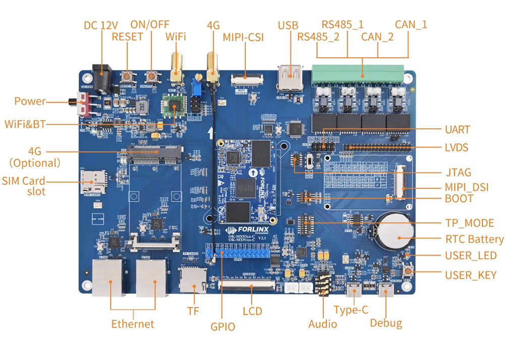
Note: This software manual will no longer describe the hardware parameters. Before referring to this manual for software development, you need to read the “OK-MX9352-C Hardware Manual” under the path of “Hardware Materials/User Manual” (the download method is the same as that of the software materials) to understand the product naming rules and the hardware configuration information of the product you are using. This will help you use this product.
1.1 Linux 6.1.36 Software Resources
Device |
Location of driver source code in the kernel |
Device Name |
|---|---|---|
PWM Backlight Driver |
drivers/pwm/pwm-flexio.c |
/sys/class/pwm/ |
USB interface U disk |
drivers/usb/storage/ |
|
USB mouse |
drivers/usb/core/hub.cdrivers/hid/usbhid/ |
/dev/input/eventX |
Ethernet |
drivers/net/ethernet/freescale/fec_main.c drivers/net/ethernet/stmicro/stmmac/dwmac-imx.c drivers/net/ethernet/stmicro/stmmac/stmmac_platform.c |
|
TF card driver |
drivers/mmc/host/sdhci-esdhc-imx.c |
/dev/block/mmcblk1pX |
EMMC driver |
drivers/mmc/host/sdhci-esdhc-imx.c |
/dev/block/mmcblk0pX |
OV5645 |
drivers/media/i2c/ov5645.c |
/dev/videoX |
CSI |
drivers/staging/media/imx/dwc-mipi-csi2.c drivers/staging/media/imx/imx8-isi-core.c |
|
RTC |
drivers/rtc/rtc-pcf8563.c |
/dev/rtc0 |
Type-c serial port |
drivers/tty/serial/fsl_lpuart.c |
/dev/ttyLP* |
RS485 serial port |
drivers/usb/serial/xr_serial.c |
/dev/ttyUSB0/dev/ttyUSB3 |
USB to serial port |
drivers/usb/serial/xr_serial.c |
/dev/ttyUSB1/dev/ttyUSB2 |
LED |
drivers/leds/leds-gpio.c |
|
Audio driver |
sound/soc/codecs/nau8822.c |
/dev/snd/ |
Watchdog |
drivers/watchdog/imx7ulp_wdt.c |
/dev/watchdog |
Can driver |
drivers/net/can/flexcan.c |
|
Bluetooth driver |
drivers/bluetooth/* |
|
WIFI driver |
drivers/net/wireless/realtek/rtl8723DU/ |
|
4G driver |
drivers/net/usb/GobiNet* |
|
I2C driver |
drivers/i2c/busses/i2c-imx-lpi2c.c |
|
Mipi display driver |
drivers/gpu/drm/panel/panel-forlinx-mipi.c |
/dev/fb0 |
Lvds display driver |
drivers/gpu/drm/panel/panel-simple.c |
/dev/fb0 |
Rgb display driver |
drivers/gpu/drm/panel/panel-simple.c |
/dev/fb0 |
GT911 touch driver |
drivers/input/touchscreen/goodix.c |
/dev/input/eventX |
GT928 touch driver |
drivers/input/touchscreen/goodix.c |
/dev/input/eventX |
TSC2007 Touch Driver |
drivers/input/touchscreen/tsc2007.c |
/dev/input/eventX |
FT5X06 Touch Driver |
drivers/input/touchscreen/edt-ft5x06.c |
/dev/input/eventX |
1.2 Flashing and Booth Configuration
The OK-MX9352-C supports TF card burning and OTG burning, as well as eMMC and TF card booting. The DIP switch shown in the figure below is for eMMC booting.
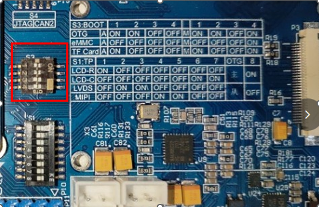
A core |
M core |
||||
|---|---|---|---|---|---|
DIP Switch |
1 |
2 |
3 |
4 |
1 |
OTG |
ON |
ON |
OFF |
OFF |
ON |
EMMC |
OFF |
OFF |
OFF |
OFF |
OFF |
TF Card |
ON |
OFF |
OFF |
OFF |
ON |
Note: The silk screen next to the DIP switch on the carrier board shows the DIP switch position in different states, and you can directly set the switch according to the silk screen. Currently, eMMC, TF and OTG modes are supported.
2. Preparation Before Startup
The OK-MX9352-C development board has two system login methods, serial and network login.
Hardware preparation before system startup:
12V 3A DC power cable
USB type-c cable (used for serial port login)
Network cable (for network login)
Check the start mode dip switch
Please check the black DIP switch on your board to make sure they are set to the desired boot mode, please refer to “1.3 Flashing and Booth Configuration” for boot mode settings.
2.1 Hyper Terminal Settings
2.1.1 Serial Port Login
Note:
Serial port settings: Baud rate 115200, 8 data bits, 1 stop bit, no parity bit, no flow control;
The serial terminal login uses the root user with no password;
Software: Windows PC requires Super Terminal; choose a familiar serial terminal software.
Here is an example using Putty to explain how to configure the terminal:
Step1: Use the serial cable to connect the development board and PC, confirm the serial port number of the connected computer, check the serial port number from the “Device Manager”, and take the actual port number recognized by the computer as the standard, SERIAL-A is the A-core serial port, and SERIAL-B is the M-core serial port;
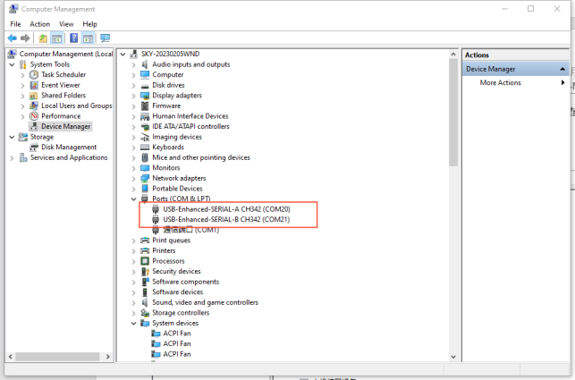
Step 2: Open and set up putty, then set the“ line according to the COM port of the computer used, baud rate 115200;
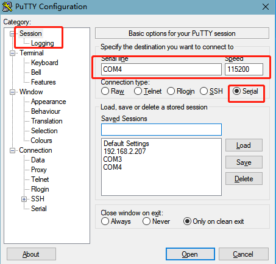
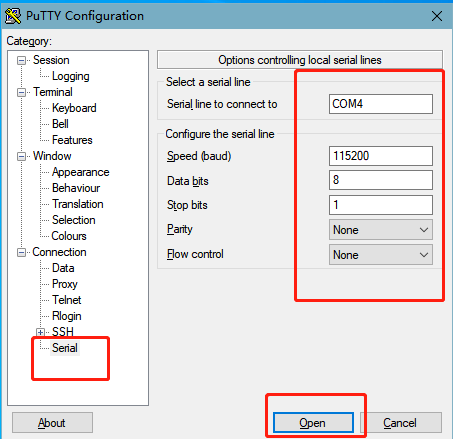
Step 3: The login account name is root, and no password. Click “Enter”.
NXP i.MX Release Distro 6.1-mickledore ok-mx93 ttyLP0
ok-mx93 login: root
root@ok-mx93:~#
Step 4: Check the kernel version information (the information will be slightly different for different kernel versions).
root@ok-mx93:~# cat /proc/version
Linux version 6.1.36 (forlinx@ubuntu) (aarch64-poky-linux-gcc (GCC) 12.3.0, GNU ld (GNU Binutils) 2.40.0.20230620) #1 SMP PREEMPT Fri Feb 23 11:03:02 CST 2024
From the printed information, you can see the imaged flashed to the SoM is Linux5.15.52.
Kernel version information can also be viewed with the uname -a command:
root@ok-mx93:~# uname -a
Linux ok-mx93 6.1.36 #1 SMP PREEMPT Fri Feb 23 11:03:02 CST 2024 aarch64 GNU/Linux
2.2.2 Common Serial Port Issues
Common problem troubleshooting points for logging in using the serial port are as follows:
Case 1: No information is printed after connecting to the serial port:
First, check whether the DIP switch is correct;
Re-open the serial port;
Change a serial port cable to test it;
If all of the above still does not work, check the status of the SoM LED. If it is always on, the system may not be able to start, then the system needs to be re-flashed.
Case 2: Unable to input commands after connecting to the serial port:
1. Reopen the serial port;
2. Replace the USB serial port cable with a new USB port on the computer, view the corresponding COM port in the device management, and reopen the serial port;
3. Replace the serial cable with a new one.
Case 3: Device Manager does not recognize the port:
Serial port driver is not installed. Try to install it.
Path: OK-MX9352-C（Linux）User’s Manual\Tool\CH343CDC.EXE
2.3 Network Login Methods
In addition to logging in via the debugging serial port, the OK-MX9352-C supports SSH network login to the development board and also supports FTP file transfer. The following is an example of the use of network tools (development board IP is 192.168.1.50).
2.3.1 Network Connection Test
Note:
The default factory IP for eth0 is 192.168.0.232, and eth1 has not been configured;
The computer and board should be on the same network segment for testing.
Before logging into the network, ensure that the direct network connection between the computer and the development board is functioning properly. You can test the connection status via pin command. The specific method is as follows:
Connect eth0 of the development board to the computer through the network and power up the development board. A blue light on the SoM will blink after the kernel starts, and the network card connected to the computer will blink quickly after normal startup. At this point, you can test the network connection;
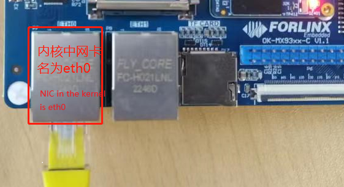
2. Close the computer firewall (General computer operations, not described here in detail), then open the computer’s run command;
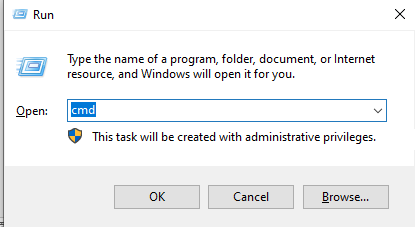
3. Use cmd to open the administrator interface , and the ping command to test the network connection status of the computer and the development board.
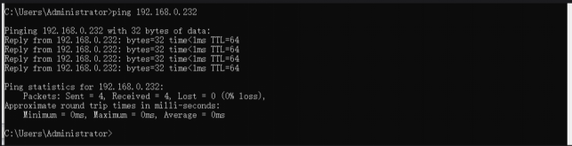
A data return indicates a normal network connection.
2.3.2 SSH
The OK-MX9352-C development board supports SSH service, and the SSH service is automatically enabled when the board starts up, so you can use it as an SSH server after setting the IP address. You can log in to the development board via SSH for development and debugging, as well as use scp for file transfer.
Note:
Default factory account root for SSH login with no password;
The default factory IP for eth0 is 192.168.0.232;
File transfers can be performed with scp.

Click “Open”, the following dialog box will appear, click “Yes” to enter the login screen.

login as: root //Enter the board root account as prompted
root@ok-mx93:~#
When logging in with putty, the following error is reported. It is a problem with the putty version. You need to update the putty version:
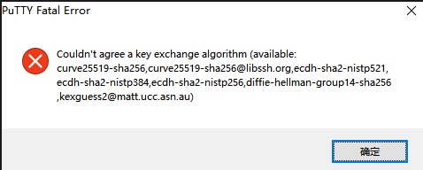
You can use WinSCP (please install the software by yourself) to copy the file and login as follows:

The successful login is/home/root, as shown below:
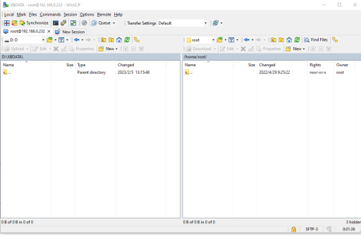
Change to the home directory as follows:
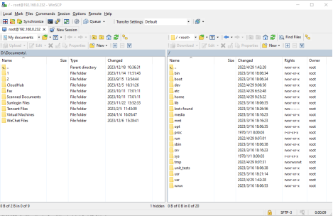
On a windows system, the command line is as follows:
C:\Users\Administrator>ssh root@192.168.0.232
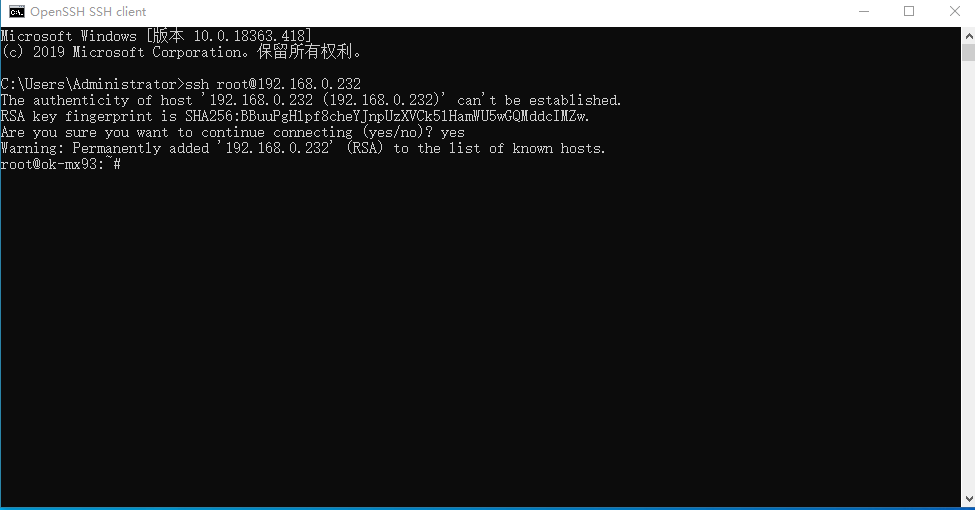
When logging in for the first time, you need to enter yes to confirm the connection according to the prompt, and when exiting, enter exit.
For example, to copy the current directory image to the root directory of the development board, enter the following command:
C:\Users\Administrator>ssh root@192.168.0.232
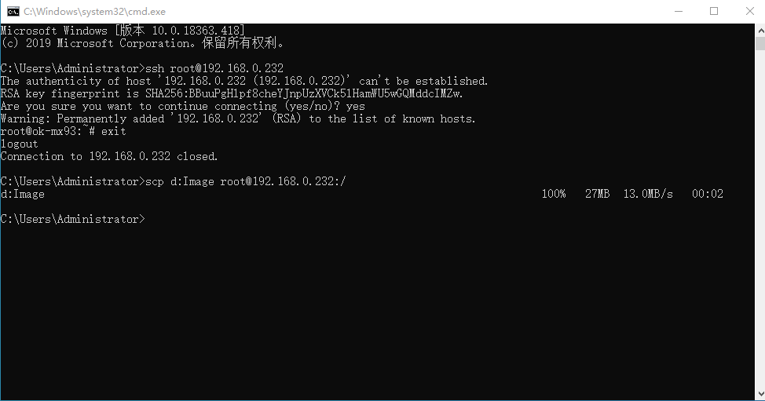
Note: If SSH is not supported on your PC, please install it yourself.
If an error is reported as shown below:
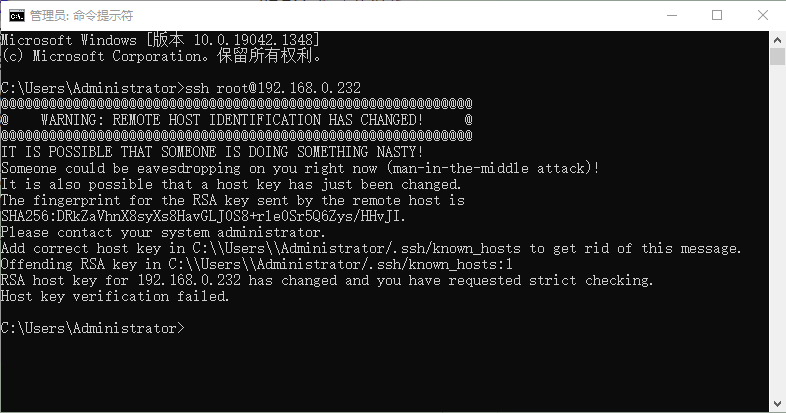
This situation indicates that you have used SSH to log in to another development board with the same IP address before, so the above error will be reported when you log in to the development board of another platform. At this time, the solution is to enter the following two commands:
C:\Users\Administrator>cd .ssh
C:\Users\Administrator\.ssh>del known_hosts
Just re-enter the ssh command to log in after completing the above.
2.3.3 FTP
The OK-MX9352-C development board supports FTP service, and the FTP service is automatically enabled when the board starts up, so you can use it as an FTP server after setting the IP address. The following describes how to utilize the FTP tool for file transfer.
Path: OK-MX9352-C (Linux) user profile\tool\FileZilla*
Install FileZilla tool on Windows and follow the steps shown in the image below to set it up. The user name and password are both forlinx. You can also log in with the user name root and an empty password.
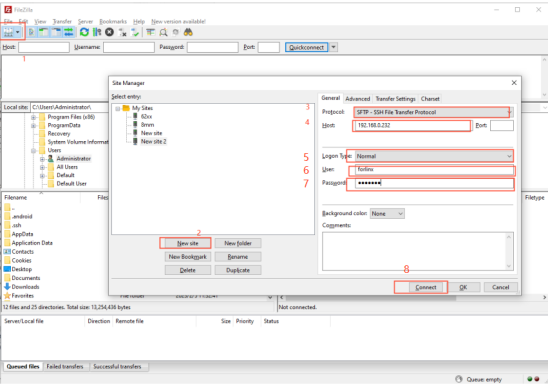
After successful login, you can upload and download.
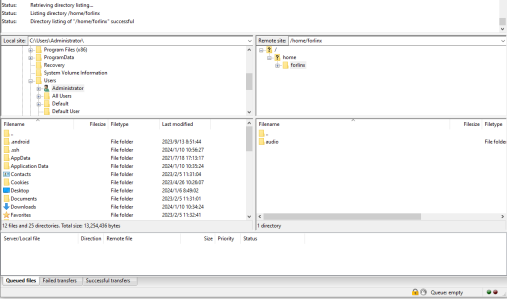
2.4 EMMC System Partition Table
The following table is the eMMC memory partition information of Linux operating system:
Boot partition
Name |
Offset |
Size |
File system |
Content |
|---|---|---|---|---|
mmcblk0boot0 |
0 |
4 MB |
No |
Store uboot |
User partition:
Name |
Offset |
Size |
File system |
Content |
|---|---|---|---|---|
bootloader |
32 KB |
4064KB |
No |
Store uboot |
env |
4 MB |
16KB |
No |
Store uboot environment variable |
mmcblk0p1 |
8MB |
120MB |
FAT32 |
Store kernel image and device tree |
mmcblk0p2 |
128MB |
7.2G |
Ext4 |
File system |
Note: Uboot only needs to be stored in either the Boot partition or the User partition. If u-boot exists in both the Boot and User partitions, the u-boot in the Boot partition will be prioritized for booting.
Use the df command to view disk usage on a system. df -m displays file system disk space usage in MB. The following image depicts the default disk usage of a factory-installed system （using the qt file system). Please note that the information provided is for reference only, and actual parameters may vary.
root@ok-mx93:~# df -m
Filesystem 1M-blocks Used Available Use% Mounted on
/dev/root 6799 2922 3539 46% /
devtmpfs 359 1 359 1% /dev
tmpfs 488 0 488 0% /dev/shm
tmpfs 196 9 187 5% /run
tmpfs 4 0 4 0% /sys/fs/cgroup
tmpfs 488 1 488 1% /tmp
tmpfs 488 1 488 1% /var/volatile
tmpfs 98 0 98 0% /run/user/0
/dev/mmcblk0p1 120 31 90 26% /run/media/Boot-mmcblk0p1
Using the free command to check memory usage. The following image illustrates the memory usage without any external devices connected. Please note that this is for reference only, and actual parameters may vary.
root@ok-mx93:~#free
total used free shared buff/cache available
Mem: 998816 100472 792464 12444 105880 797184
2.5 System Shutdown
In general, you can turn off the power directly, but avoid doing so during important operations like data storage or usage to prevent irreversible file damage. Damaged files may require firmware rewrite. To ensure the data is completely written, enter the sync command to synchronize the data before turning off the power.
The command “reboot” can be used to restart the development board. You can also restart the hardware by pressing the RESET key or directly power off and restart.
Note: If the product designed by the user based on the SoM has an abnormal system shutdown due to an accidental power loss in use, measures such as power-down protection can be incorporated into the design.
2.6 Screen Switching
OK-MX9352 supports mipi, lvds, rgb and other screen interfaces. At present, there are three control methods for screen switching: kernel device tree designation, uboot menu dynamic control, and QT interface ubootmenu application program. Currently OK-MX9352 supports MIPI1024x600 capacitive screen, LVDS 1280x800, LCD 1024x600, LCD7 800x480 capacitive screen, LCD7 800x480 resistive screen.
2.6.2 Kernel Device Tree Specification
Device tree path: OKMX93-linux-sdk/OKMX93-linux-kernel/arch/arm64/boot/dts/freescale/OK-MX9352-C.dts
This method can set the system default screen display to the desired way without connecting the serial terminal selection, which is suitable for mass production. However, we need to manually modify the device tree and regenerate the system image once again This method has higher priority than the U-boot menu dynamica control.
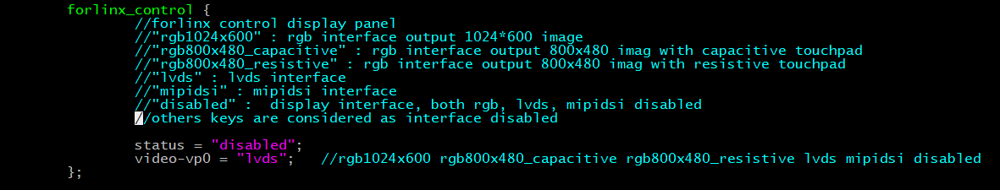
In the kernel source code, open the OK-MX9352-C.dts file and find the forlinx_control node:
Parameter Description:
Meaning |
|
|---|---|
status |
Describe the node state: disabled is for off, okay is for on |
video-vp0 |
Description of configuring vp0 output channel |
Users need to change the setting parameters as required. After saving, it is necessary to recompile and generate an image.
As described in the comment of this node:
Video-vp0 can only write “rgb1024x600”, “rgb800x480_capacitive”,”rgb800x480_resistive”, “lvds”, “mipidsi”, “disabled”, RGB 1024x600, RGB 800x480 capacitive screen, RGB800x480 resistive screen, lvds, mipidsi, off display. (All other values are considered disabled.). The screen type adapts to the Forlinx screen.
Other self-selected screens require modification of the lvds or rgb corresponding to the corresponding panel node in OK-MX9352-C.dts according to the timing parameters.
For example, turn on the RGB 800x480 capacitive screen and refer to the following settings:
forlinx_control {
status = “okay”;
video-vp0 = “rgb800x480_capacitive”;
};
2.6.3 DIP Switch
The mipi, lvds, rgb and other screens supported by the OK-MX9352 share the touch reset and interrupt pins, so you also need to modify the touch dip switches at the same time when switching screens to make the touch effective. Touch dial switch S1 is located above the carrier board LCD connector. The dialing mode is shown in the following table:
DIP Switch |
1 |
2 |
3 |
4 |
5 |
6 |
7 |
|---|---|---|---|---|---|---|---|
LCD resistive screen |
ON |
OFF |
OFF |
OFF |
OFF |
OFF |
OFF |
LCD capacitive screen |
OFF |
OFF |
OFF |
OFF |
OFF |
ON |
ON |
LVDS |
OFF |
ON |
ON |
OFF |
OFF |
OFF |
OFF |
MIPI |
OFF |
OFF |
OFF |
ON |
ON |
OFF |
OFF |
2.7 Resistor Screen Recalibration
After setting the touch DIP switch to the LCD resistive screen mode and selecting “LCD7 800x480 resistive screen” in the U-Boot menu, the system will automatically enter the calibration interface upon its first startup. After the calibration is completed, a calibration file named /etc/udev/rules.d/weston-calibrate.rules will be generated.
If you need to perform the calibration again, you can delete the /etc/udev/rules.d/weston-calibrate.rules file and then restart the system to recalibrate.
3. Interface Function Usage
QT test program source code path: OK-MX9352-C (Linux) user profile / Linux / source code / OKMX93-linux-sdk.tar.bz2
Unzipped to：OKMX93-linux-sdk/appsrc/forlinx-qt
The Qt routines provided by Forlinx are mainly for hardware interface call reference; Qt components, special effects, etc. are recommended to refer to the official Qt routines.
Path to the test program in the development board file system: /usr/bin/fltest_qt_*
Note: QT virtual keyboard is not supported temporarily. Please use USB interface keyboard.
3.1 Interface Function Introduction
The desktop is displayed as follows after the development board is booted:
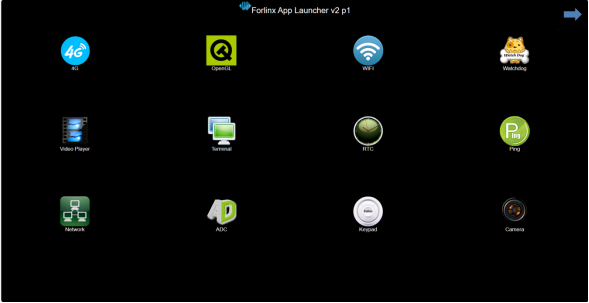
3.2 Audio Record Test
This is a desktop “audiorecorder” sound effect, you can use it to hear whether the microphone function is normal, the interface is as follows.
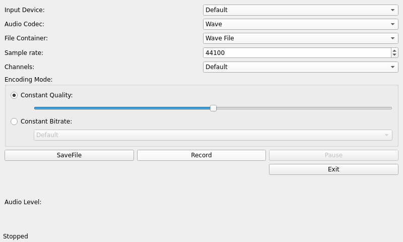
Configure AudioCodec as Wave and File Container as Wave file.
Click Save File to select the storage location of the recording file. The default storage location is/path.
Click Record to start recording.
Click STOP to stop recording.
Click Exit to exit the application.
3.3 Music Playback Test
“Musicplayer” is a simple audio test application that can be used to test if the sound card is functioning properly or as a simple audio player with the following interface:
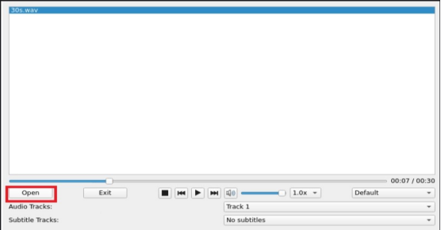
Click the Open button in the lower left corner and select test audio/home/forlinx/audio/test.mp3
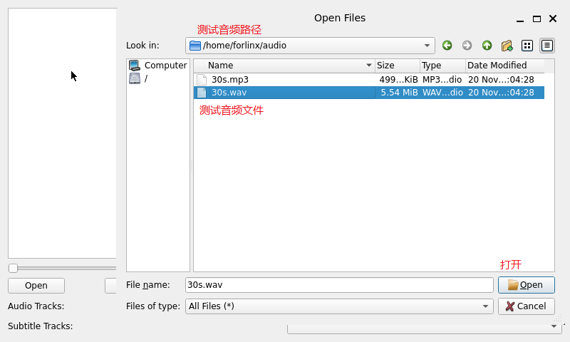
Note: If there is no sound from the earphone or speaker, please refer to “4.15 Audio Test” to enable the earphone and increase the volume.
3.4 4G Test
The “4G” test procedure is used to test the OK-MX93 External 4G Module (EC20). Before testing, please power off the development board, access the external module, insert the SIM card, and start the development board to open the test application.
Click the connect button, and the program will automatically enter the dialing process and obtain IP settings, DNS, etc.
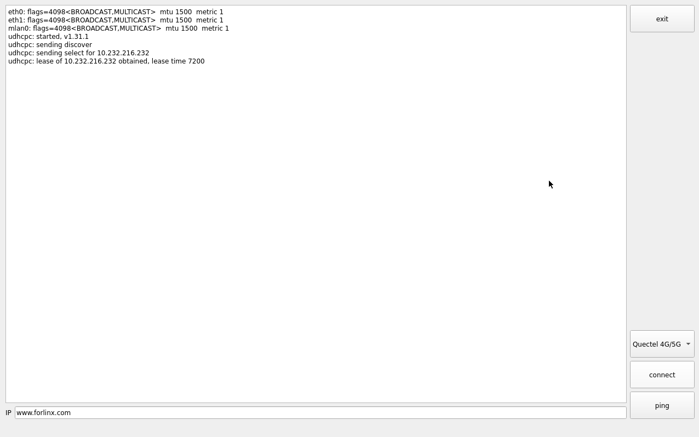
After successful dialing, you can click the ping button to perform a ping test.
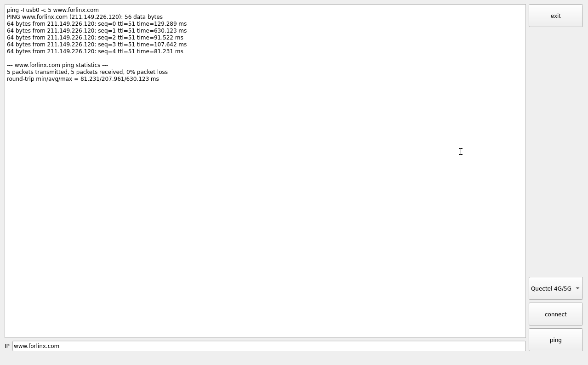
Click the Exit button to exit the test.
3.5 WIFI Test
“WIFI” is a tool to configure WiFi and test the STA mode of wifi.
The WiFi module will exist in the system in the form of wlan node. Take the test of wlan0 as an example. The application interface is as follows:
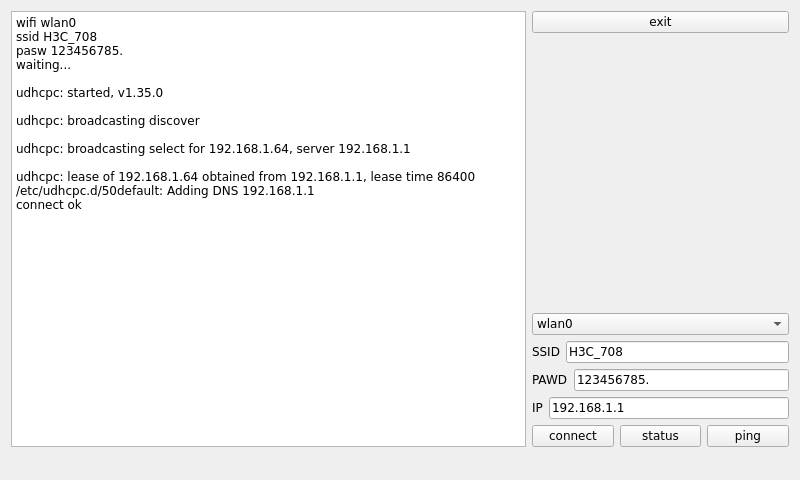
Check wlan0, enter the name of the router you need to connect to using WiFi in the SSID field, enter the router password in the PAWD field, and click CONNECT to connect to the router via wifi.
You can display the current connection status by clicking the status button, as follows:
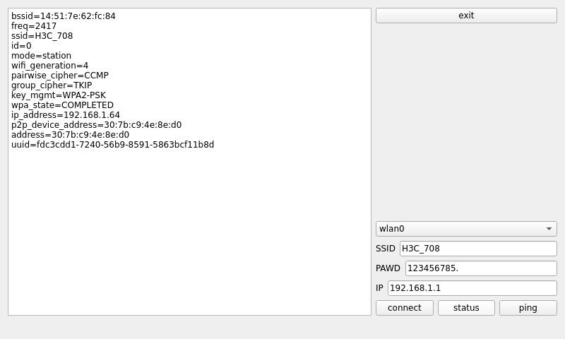
After successful connection, you can click ping to perform network testing. Enter the IP address to be pinged in the IP field and click ping, as follows:
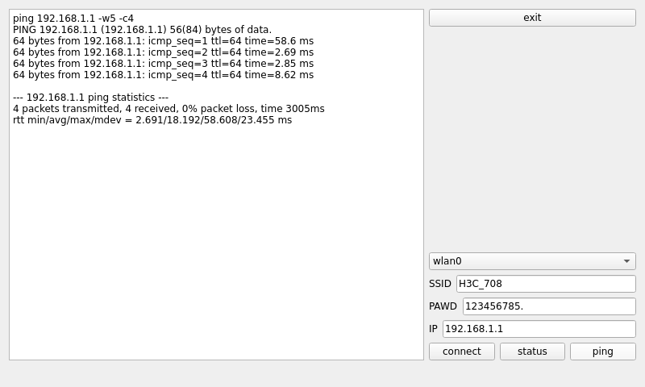
3.6 Network Configuration Test
Note: Information such as ip set in STATIC mode is saved to the relevant configuration file of the system so each reboot will use the network information set this time; network information configured in DHCP mode, on the other hand, does not need to care about this; ip addresses are dynamically assigned every reboot.
When OK-MX9352 starting, the network card is set to DHCP by default, and DHCP and STATIC modes can be selected through the “Network” network configuration application. STATIC mode configures IP address, subnet mask, gateway, DNS.
The DHCP mode interface is as follows:
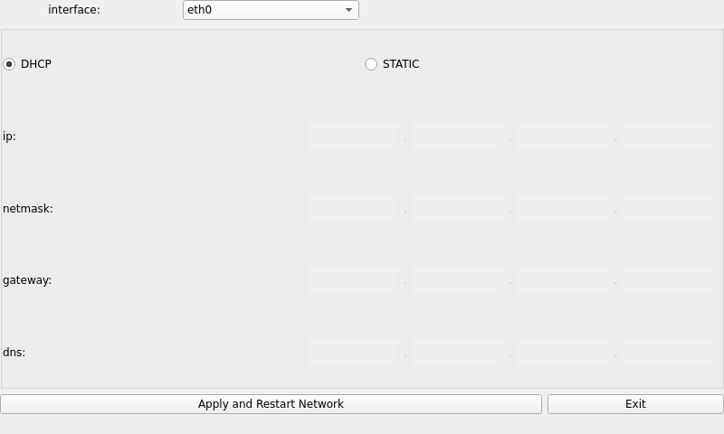
Check DHCP, select the NIC device needing to be configured, and click Apply and Restart Network at the bottom of the interface to restart the network and get the ip automatically.
The STATIC mode interface is as follows:
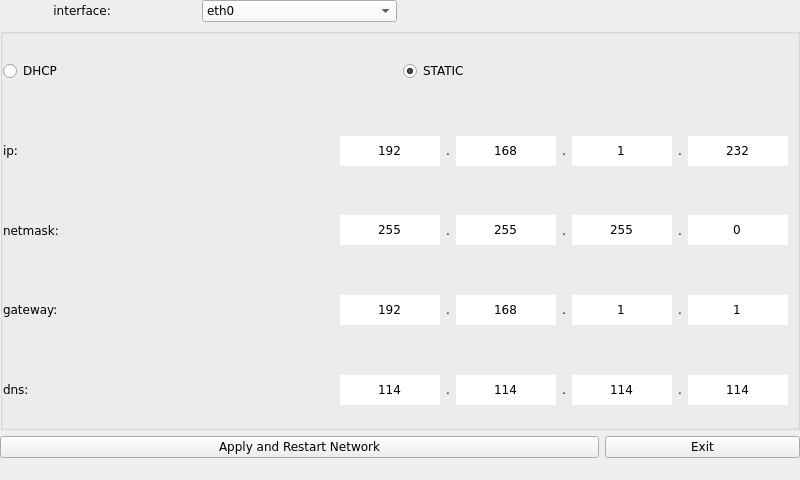
Select the NIC device to be configured in the interface, and enter the ip to be set in the ip field, enter the subnet mask in the netmask field, the gateway in the geteway field, and DNS in the dns field. After the above contents are filled, click the Apply and Restart Network at the bottom of the interface to configure the static IP according to the above settings.
3.7 Ping Test
“Ping” is the interface version application of the common network test command ping, and the interface is as follows:
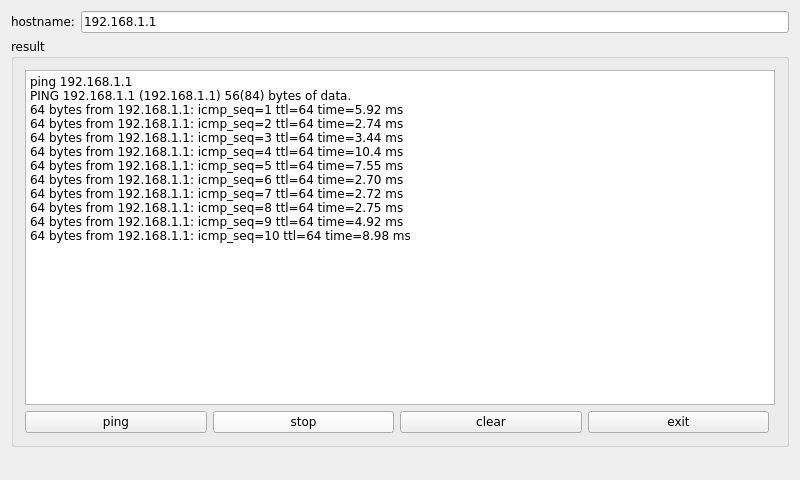
In the “hostname” field, enter the IP address of the target you want to ping. After clicking the “ping” button, the “result” field will display the ping result. As shown in the figure, if it indicates a smooth network connection, you can click “stop” to end the ping test or click “clear” to clear. Click “Stop” to stop the ping test, and click “Clear” to clear the information in result.
3.8 Watchdog Test
“WatchDog” is an application used to test whether the watchdog function is normal or not, the interface is as follows:
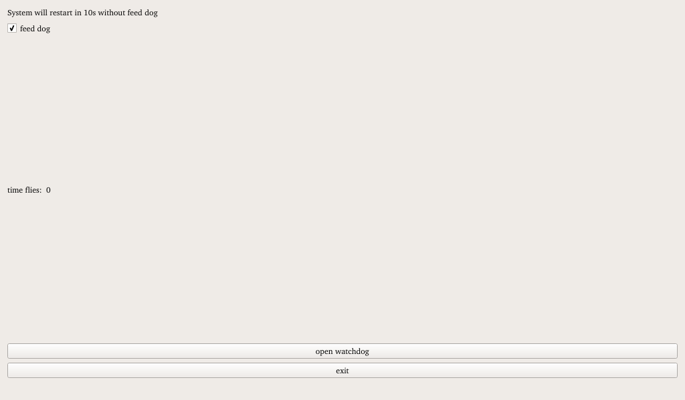
Check the feed dog and click the open watchdog button, at this time the watchdog function will be activated, the program will carry out the feed dog operation, and the system will not reboot under normal circumstances; click the close watchdog button. At this time, the program will stop the dog feeding operation, but will not stop the watchdog. The system will restart after 10 seconds.
When unchecking the feed dog, click the open watchdog button, and the watchdog function will not start, and the program will not feed the dog. After opening the watchdog for about 10 seconds, the system will restart, indicating that the watchdog function is normal.
3.9 RTC Test
“RTC” is the software used to test the real-time clock of the system, which can view and set the current system time. As follows:
After Set, you can set the time and click Save to finish the setting.
With the RTC backup battery installed, you can restart the board to confirm that the RTC clock is set successfully.
3.10 Serial Port Test
“Terminal” is a serial port test routine officially provided by Qt, which can be used to test the OK-MX93 on-board serial port. Take the test development board USB to the serial port as an example for demonstration.
The OK-MX93 carrier board integrates the XR21V1414IM48 chip, which supports USB-to-serial function. XR21V1414IM48 leads out 4 serial ports ttyUSB0, ttyUSB1, ttyUSB2 and ttyUSB3, wherein ttyUSB0 and ttyUSB3 are designed as 485 serial ports, and ttyUSB1 and ttyUSB2 are led out to carrier board P19, as shown below.
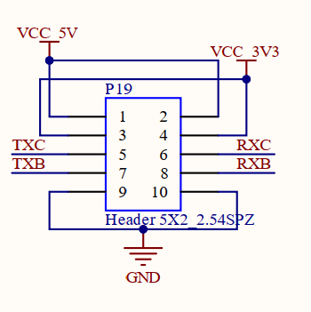
Connect RXB and TXB of P19. After the connection is complete, open Terminal.
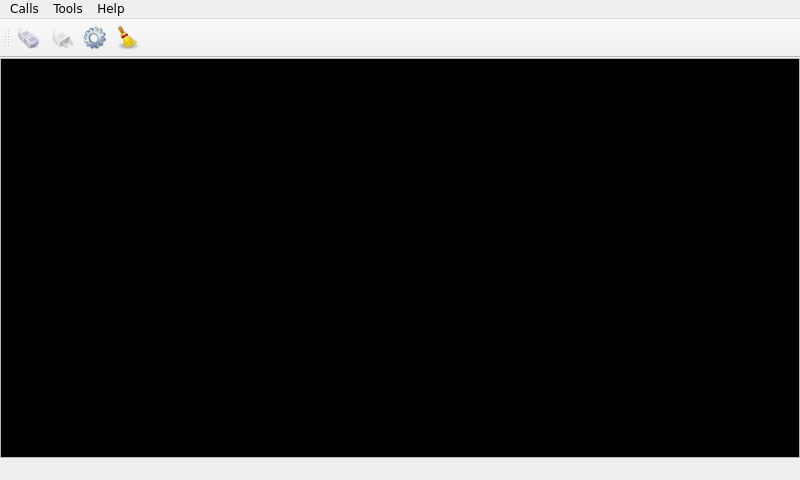
ClickFollow the steps below to set up, as RXB corresponds to the serial port ttyUSB1, select ttyUSB1 in the following figure and set the baud rate:
{kind=link}
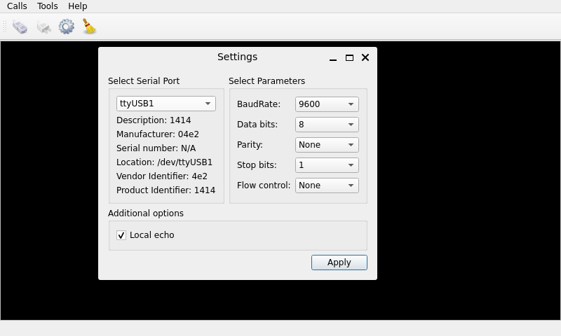
After setting up, click Apply Click ( https://cdn.nlark.com/yuque/0/2024/png/44591882/1718868402599-843919c0-2e15-4031-a7b8-17828e21f5cd.png ）on the main interface! Open the serial port.
Click on the black window to pop up the virtual keyboard or use the USB interface keyboard to enter the characters forlinx. Found serial print ffoorrlliinnxx. This indicates that the serial port loopback test was successful.
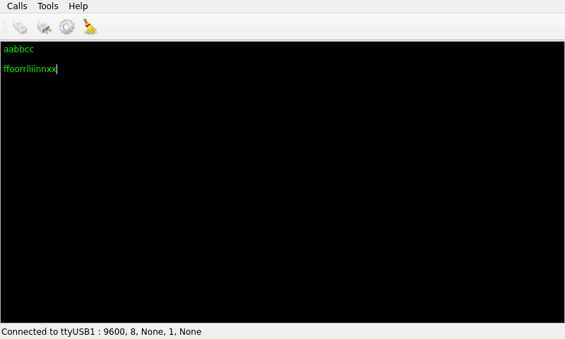
After the test is completed, click “Call ->quit” to exit the testing program.
3.11 Backlight Test
“BackLight” is the LCD backlight adjustment application. Click to open the interface as follows:
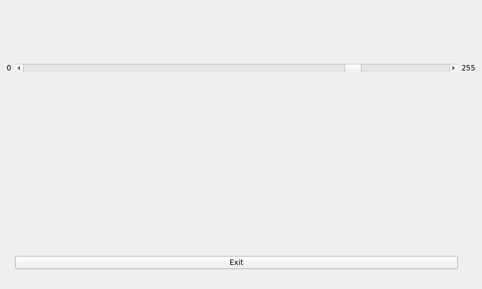
Drag the slider in the interface to adjust the screen backlight brightness. Level 0 represents the lowest brightness, with a backlight value of 1, while level 255 represents the highest brightness.”
3.12 Camera Test
Click the “Camera” icon on the desktop to test.
Click Camera video to select the camera device.
Note: If there is no MIPI camera, the device corresponding to the UVC camera is/dev/video0. If there is a MIPI camera, the device corresponding to the UVC camera is/dev/video1. Please select the corresponding device according to the actual situation.
Click camera resolution to make selection.
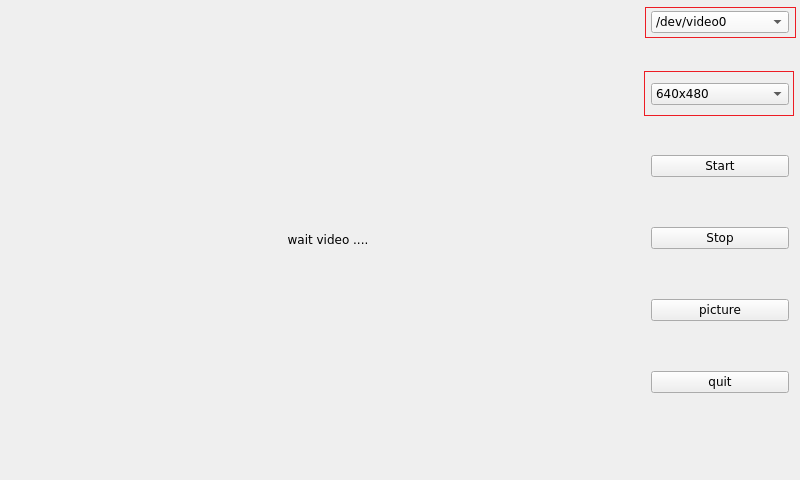
After setting the device and resolution, click Start to start the preview. The preview effect is shown in the following figure.
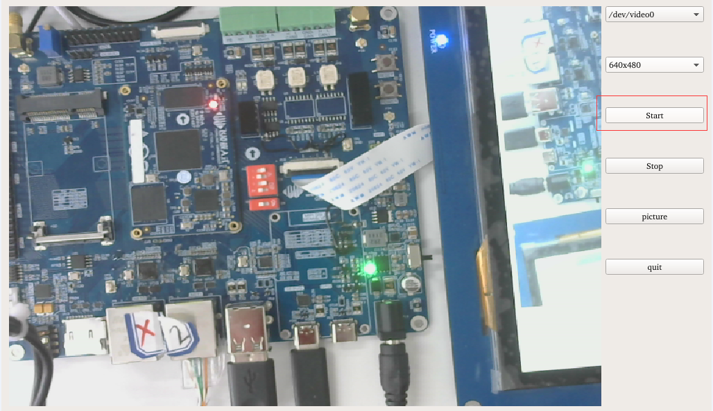
Click PICTURE to take a picture, and the photo will be saved in the /home/root/ directory.
Note: The photo function is available only after starting the preview.
Click “Stop” to stop it.
4. Command Line Function Test
The OK-MX9352-C platform has various built-in command line tools available to users.
Command line test program source code path: OK-MX9352-C (Linux) user profile / Linux / source code / OKMX93-linux-sdk.tar.bz2
Unzipped to：OKMX93-linux-sdk/appsrc/forlinx-cmd
Path to the test program in the development board file system: /usr/bin/fltest_*
The test program used in this section is integrated into the demo provided by Forlinx, so there is no need for file source explanation. We will proceed directly with the command operations.
4.1 System Information Query
View kernel and CPU information and enter the following commands:
root@ok-mx93:~# uname -a
Linux ok-mx93 6.1.36-00024-g2a8a9ecbe3de #12 SMP PREEMPT Thu May 30 15:45:57 CST 2024 aarch64 GNU/Linux
View operating system information:
root@ok-mx93:~# cat /etc/issue
NXP i.MX Release Distro 6.1-mickledore \n \l
View environment variable information:
root@ok-mx93:~# env
SHELL=/bin/sh
EDITOR=vi
QTWEBENGINE_DISABLE_SANDBOX=1
PWD=/home/root
LOGNAME=root
XDG_SESSION_TYPE=tty
MOTD_SHOWN=pam
HOME=/home/root
LANG=en_US.UTF-8
WAYLAND_DISPLAY=/run/wayland-0
QT_QPA_PLATFORM=wayland
QMLSCENE_DEVICE=softwarecontext
XDG_SESSION_CLASS=user
TERM=linux
USER=root
SHLVL=1
XDG_SESSION_ID=c2
XDG_RUNTIME_DIR=/run/user/0
PS1=\u@\h:\w\$
LC_ALL=en_US.UTF-8
HUSHLOGIN=FALSE
PATH=/usr/local/bin:/usr/bin:/bin:/usr/local/sbin:/usr/sbin:/sbin
DBUS_SESSION_BUS_ADDRESS=unix:path=/run/user/0/bus
MAIL=/var/spool/mail/root
_=/usr/bin/env
4.2 Sleep Wake-up Test
The OK-MX93 platform supports the sleep wake-up function.
Set the serial port to wake up:
root@ok-mx93:~# echo enabled > /sys/class/tty/ttyLP0/power/wakeup
Sleep:
root@ok-mx93:~# echo mem > /sys/power/state
[ 40.831033] GobiNet 1-1.3:1.4: Packet Dropped
[ 42.124889] GobiNet 1-1.3:1.4: Packet Dropped
[ 44.147451] GobiNet 1-1.3:1.4: Packet Dropped
[ 46.034494] kauditd_printk_skb: 4 callbacks suppressed
[ 46.034505] audit: type=1334 audit(1677837001.272:16): prog-id=10 op=UNLOAD
[ 46.046667] audit: type=1334 audit(1677837001.272:17): prog-id=9 op=UNLOAD
[ 46.167492] GobiNet 1-1.3:1.4: Packet Dropped
Tap the serial port to wake up
[ 61.968918] rtc-pcf8563 2-0051: low voltage detected, date/time is not reliable.
[ 61.976969] imx-dwmac 428a0000.ethernet eth1: Link is Down
[ 61.977245] imx-dwmac 428a0000.ethernet eth1: FPE workqueue stop
[ 62.002722] PM: suspend devices took 0.040 seconds
[ 62.005273] Disabling non-boot CPUs ...
[ 62.005680] psci: CPU1 killed (polled 0 ms)
[ 62.007684] Enabling non-boot CPUs ...
[ 62.007842] Detected VIPT I-cache on CPU1
[ 62.007884] cacheinfo: Unable to detect cache hierarchy for CPU 1
[ 62.007894] GICv3: CPU1: found redistributor 100 region 0:0x0000000048060000
[ 62.007931] CPU1: Booted secondary processor 0x0000000100 [0x412fd050]
[ 62.008209] CPU1 is up
[ 62.058647] imx-dwmac 428a0000.ethernet eth1: configuring for phy/rgmii-id link mode
[ 62.096319] imx-dwmac 428a0000.ethernet eth1: No Safety Features support found
[ 62.096335] imx-dwmac 428a0000.ethernet eth1: IEEE 1588-2008 Advanced Timestamp supported
[ 62.096502] imx-dwmac 428a0000.ethernet eth1: FPE workqueue start
[ 62.102096] rtc-pcf8563 2-0051: low voltage detected, date/time is not reliable.
[ 62.374415] usb 1-1.4: reset high-speed USB device number 4 using ci_hdrc
[ 63.369259] PM: resume devices took 1.356 seconds
[ 63.371346] Bluetooth: hci0: RTL: examining hci_ver=08 hci_rev=000d lmp_ver=08 lmp_subver=8723
[ 63.487397] OOM killer enabled.
[ 63.488336] Bluetooth: hci0: RTL: rom_version status=0 version=2
[ 63.490549] Restarting tasks ...
[ 63.496551] Bluetooth: hci0: RTL: loading rtl_bt/rtl8723d_fw.bin
[ 63.505942] Bluetooth: hci0: RTL: loading rtl_bt/rtl8723d_config.bin
[ 63.510595] done.
[ 63.512393] Bluetooth: hci0: RTL: cfg_sz 14, total sz 32430
[ 63.514219] random: crng reseeded on system resumption
[ 63.536084] PM: suspend exit
[ 63.782345] Bluetooth: hci0: RTL: fw version 0x829a4b4a
[ 63.847613] Bluetooth: MGMT ver 1.22
[ 65.161019] imx-dwmac 428a0000.ethernet eth1: Link is Up - 1Gbps/Full - flow control rx/tx
[ 65.169329] IPv6: ADDRCONF(NETDEV_CHANGE): eth1: link becomes ready
4.3 ADC Test
The development board provides 4 x ADC, which can be connected to the same sliding rheostat R171 through the P16 pin of the carrier board. Refer to the schematic diagram. The principle is as follows:
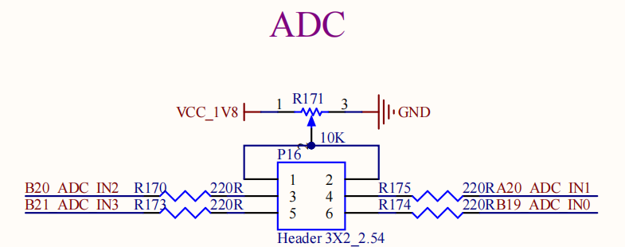
Take ADC0 as an example, according to the silk-screen on the right side of P16 and the schematic diagram, short circuit pin 1 and pin 6. At the command line, enter the following command:
root@ok-mx93:~# cat /sys/bus/iio/devices/iio\:device0/in_voltage_scale
0.439453125
root@ok-mx93:~# cat /sys/bus/iio/devices/iio\:device0/in_voltage0_raw
3327
After the above command is input, the value corresponding to the ADC0 will be output at the terminal, the sliding rheostat will be adjusted, and the value read by the above command will change accordingly.
Calculation formula of actual voltage: voltage = voltage_scale * voltage_raw
0.439453125 * 3327 ≈ 1462 mV
The testing method for the remaining three ADC is the same.
4.4 LED Test
OK-MX93 SoM has one controllable blue LED, which functions as a heartbeat light after the board is powered on.
If the user disables this function, need to modify the device tree file in the source code: OKMX93-linux-sdk/OKMX93-linux-kernel/arch/arm64/boot/dts/freescale/OK-MX9352-C.dts, change the attribute of the led-0 node state=”on” to “off”, linux,default-trigger = “heartbeat” to “none”. “on” to “off” and Linux,default-trigger = “heartbeat” to “none”.
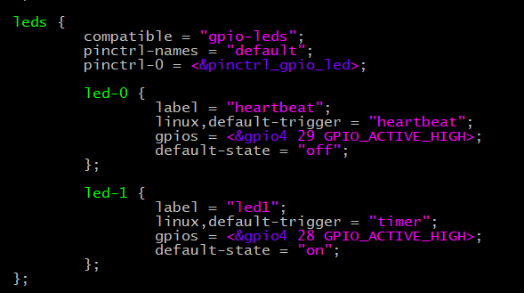
The user can also manually modify the led lamp status as follows:
To view trigger conditions:
root@ok-mx93:/# cat /sys/class/leds/heartbeat/trigger
none bluetooth-power rfkill-any rfkill-none kbd-scrolllock kbd-numlock kbd-capslock kbd-kanalock kbd-shiftlock kbd-altgrlock kbd-ctrllock kbd-altlock kbd-shiftllock kbd-shiftrlock kbd-ctrlllock kbd-ctrlrlock timer disk-activity disk-read disk-write ide-disk [heartbeat] cpu cpu0 cpu1 mmc0 default-on panic mmc1 hci0-power rfkill0 rfkill1
Where [heartbeat] indicates that the current trigger condition is the system heartbeat light. Write the above string in trigger to modify the trigger condition.
User Control
When the trigger condition of the led is set to none, the user can control the on and off of the led through the command.
root@ok-mx93:/# echo none > /sys/class/leds/heartbeat/trigger //Set trigger conditions
root@ok-mx93:/# echo 1 > /sys/class/leds/heartbeat/brightness //Turn on the LED light
root@ok-mx93:/# echo 0 > /sys/class/leds/heartbeat/brightness //Turn off the LED light
Change the blue LED to a heartbeat light
root@ok-mx93:/# echo heartbeat > /sys/class/leds/heartbeat/trigger //Set trigger condition to heartbeat
There is a controllable blue LED (D6) on the OK-MX93-C carrier board, which corresponds to led1 in the/sys/class/leds directory of the software.
LED light using method is as follows:
View trigger conditions
root@ok-mx93:~# cat /sys/class/leds/led1/trigger
none bluetooth-power rfkill-any rfkill-none kbd-scrolllock kbd-numlock kbd-capslock kbd-kanalock kbd-shiftlock kbd-altgrlock kbd-ctrllock kbd-altlock kbd-shiftllock kbd-shiftrlock kbd-ctrlllock kbd-ctrlrlock [timer] disk-activity disk-read disk-write ide-disk heartbeat cpu cpu0 cpu1 mmc0 default-on panic mmc1 rfkill0 hci0-power rfkill1
root@ok-mx93:~# cat /sys/class/leds/led1/delay_on
500
root@ok-mx93:~# cat /sys/class/leds/led1/delay_off
500
It can be seen that the default trigger condition is timer, and the trigger time is 500ms on and 500ms off.
User Control
When the led trigger condition is set to none, the on and off of the led can be controlled by the command.
root@ok-mx93:~# echo none > /sys/class/leds/led1/trigger
root@ok-mx93:~# echo 1 > /sys/class/leds/led1/brightness //Control LED1 to turn on
root@ok-mx93:~# echo 0 > /sys/class/leds/led1/brightness //Control LED1 to turn off
4.5 Serial Port Test
The OK-MX93 carrier board integrates the XR21V1414IM48 chip, which supports USB-to-serial function. XR21V1414IM48 leads out 4 serial ports ttyUSB0, ttyUSB1, ttyUSB2 and ttyUSB3, wherein ttyUSB0 and ttyUSB3 are designed as 485 serial ports, and ttyUSB1 and ttyUSB2 are led out to carrier board P19, as shown below.

Note: The test program provided by Forlinx provides a string of random characters of length 30, which can be modified by the user according to their own needs.
Command line serial port test program location: OKMX93-linux-sdk/appsrc/forlinx-cmd/uarttest.
4.5.1 USB Serial Port Test
Turn off the power supply, short circuit the 5th pin and the 8th pin of P19, and connect the receiving pin of ttyUSB1 to the transmitting pin of ttyUSB2.
Set ttyUSB1 to receive mode:
root@ok-mx93:~# fltest_uarttest -d /dev/ttyUSB1 r &
[1] 499
Welcome to uart test
Set ttyUSB2 to send model
root@ok-mx93:~# fltest_uarttest -d /dev/ttyUSB2 w
Welcome to uart test
recv data:F2JgWJfEWGOvSOjY5uulRQzDbJ7wG
send data:F2JgWJfEWGOvSOjY5uulRQzDbJ7wG
recv data:zeYc5YNZh3pb7Ubf9O6QjVAXW8FFA
send data:zeYc5YNZh3pb7Ubf9O6QjVAXW8FFA
recv data:G9c4xfHFFbk7hyiJeGLrj2rwMtdQU
send data:G9c4xfHFFbk7hyiJeGLrj2rwMtdQU
recv data:SwQ1wGSMwhvOQ6znGjvI8iERqIroV
send data:SwQ1wGSMwhvOQ6znGjvI8iERqIroV
recv data:coHL6O8e6uCM9BEyhF9flnQUb3lYs
^C //Stop sending
root@ok-mx93:~#
TtyUSB1 has received the data sent by ttyUSB2, and the test is successful.
4.5.2 RS485 Serial Port Test
TtyUSB0 and ttyUSB3 are designed as 485 serial ports. To connect two 485 serial ports, pin A shall be connected with pin A, and pin B shall be connected with pin B, that is, pin 8 of P27 shall be connected with pin 11, and pin 9 shall be connected with pin 12.
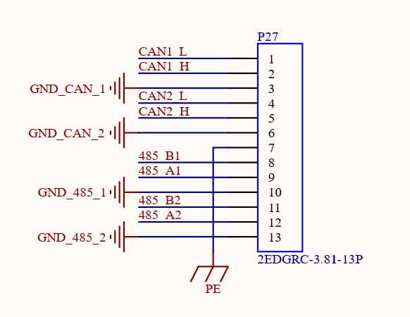
Set ttyUSB0 to receive mode:
root@ok-mx93:~# fltest_uarttest -d /dev/ttyUSB0 r &
[1] 493
Welcome to uart test
Set ttyUSB3 to send model
root@ok-mx93:~# fltest_uarttest -d /dev/ttyUSB3 w
Welcome to uart test
recv data:bbLolQiCfhrTq02H3JY9ia0cJYzhx
send data:bbLolQiCfhrTq02H3JY9ia0cJYzhx
recv data:FJHEZWgtQ7tHKBcWT1TIG1FV5L38z
send data:FJHEZWgtQ7tHKBcWT1TIG1FV5L38z
recv data:CPzKsWvmr1fLLyRNdECsws7TxzMdH
send data:CPzKsWvmr1fLLyRNdECsws7TxzMdH
recv data:DSkpCnMVEN7A3ZXbBYpODqkZvDMKq
send data:DSkpCnMVEN7A3ZXbBYpODqkZvDMKq
recv data:W9kQgO9ldb7lFNcrYN1CyBu7Ei6js
send data:W9kQgO9ldb7lFNcrYN1CyBu7Ei6js
recv data:rAFYIuN73PennZAZ75UCf6amRvHcY
send data:rAFYIuN73PennZAZ75UCf6amRvHcY
recv data:MB1x8106kVIz3Ep3D6hjzicQ24jQR
send data:MB1x8106kVIz3Ep3D6hjzicQ24jQR
recv data:IO1XPPs9O5XQ2n7GbPXDckXBnKkJH
send data:IO1XPPs9O5XQ2n7GbPXDckXBnKkJH
^C //Stop sending
root@ok-mx93:~#
4.6 DDR Bandwidth Test
root@ok-mx93:~# fltest_memory_bandwidth.sh
L1 cache bandwidth rd test with # process
0.008192 24497.16
0.008192 24492.71
0.008192 24464.40
0.008192 24492.71
0.008192 24492.71
L2 cache bandwidth rd test
0.131072 11321.04
0.131072 11326.33
0.131072 11323.10
0.131072 11323.10
0.131072 11312.83
Main mem bandwidth rd test
52.43 5151.19
52.43 5154.73
52.43 5166.93
52.43 5165.40
52.43 5162.35
L1 cache bandwidth wr test with # process
0.008192 23898.78
0.008192 23911.78
0.008192 23903.11
0.008192 23592.55
0.008192 23885.79
L2 cache bandwidth wr test
0.131072 12348.10
0.131072 12321.93
0.131072 12322.16
0.131072 12345.13
0.131072 12336.19
Main mem bandwidth wr test
52.43 832.85
52.43 832.32
52.43 833.45
52.43 833.01
52.43 832.80
The DDR4 bandwidth of the OK-MX9352-C is shown in the figure above, with a read bandwidth of about 5162M/s and a read and write bandwidth of about 832M/s.
4.7 CAN Test
There are two CAN ports CAN0 and CAN1 on the carrier board. Connect the H end of the CAN0 port to the H end of the CAN1 port, and connect the L end of the CAN0 port to the L end of the CAN1 port.
Note: Before the can test, please check whether the P30 and P32 jumper caps are connected. If not, please connect them before the test.
Set up the board can service as follows:
root@ok-mx93:~# ip link set can0 up type can bitrate 500000
root@ok-mx93:~# ip link set can1 up type can bitrate 500000
Set receive data and transmit data of can
root@ok-mx93:~# candump can0 & //CAN0 is in receiving mode
root@ok-mx93:~# cangen can1 //CAN1 randomly sends frame data
Below is the display of received data on the terminal:
can0 1AA [7] A2 E6 3F 36 9C 2A 75
can0 4D5 [8] EE DD 8D 14 C3 57 1B 0B
can0 169 [8] 3D 11 D3 35 A4 3F 89 4B
can0 4AD [1] 80
can0 4FA [8] 07 54 16 43 10 33 1A 6F
can0 055 [8] 98 28 7F 53 A4 24 65 00
can0 76B [4] 89 A1 44 0E
can0 62A [5] 00 E3 6A 67 D5
can0 35C [3] 71 12 AC
can0 6C0 [8] F5 D7 D9 3C 29 00 B3 1D
can0 60C [2] CD 3F
can0 403 [8] 3E D2 25 5E FD 70 0E 0D
can0 648 [5] 0D A4 28 7C 9E
can0 6C2 [6] 42 E3 9C 5C 2D 7E
can0 2FA [8] 68 FD 98 7B 24 A9 20 08
can0 331 [8] F9 90 57 71 8D 46 A3 75
can0 20B [8] BF C6 61 27 CB F8 B4 35
can0 3CA [5] F4 F8 67 53 D6
can0 7E7 [1] 8F
can0 20F [8] E8 5C 72 03 57 B0 41 00
can0 513 [6] F5 6E 79 5C D6 EB
can0 59C [7] 03 6A E1 14 96 28 FB
can0 703 [8] BA D1 1B 40 34 CA 5C 66
can0 7D4 [4] C1 10 00 5C
can0 61E [1] AB
can0 636 [8] BE BB A1 62 1D FE 85 3E
can0 461 [8] 08 EA E9 34 70 66 D9 29
can0 71C [1] C7
can0 7E7 [8] 05 08 7D 63 83 15 3A 07
can0 7F4 [8] 19 3E 35 3F F7 AE A2 63
can0 174 [3] 2B 79 FF
can0 287 [8] 28 13 84 70 A6 78 3B 0E
can0 16E [3] 8E 12 F0
can0 270 [5] 6A 80 3E 17 AF
[…]
Other common commands
Check CAN bus status:
root@ok-mx93:~# ip -details -statistics link show can0
4: can0: <NOARP,UP,LOWER_UP,ECHO> mtu 72 qdisc pfifo_fast state UP mode DEFAULT group default qlen 10
link/can promiscuity 0 minmtu 0 maxmtu 0
can <FD> state ERROR-ACTIVE (berr-counter tx 0 rx 0) restart-ms 0
bitrate 500000 sample-point 0.875
tq 25 prop-seg 37 phase-seg1 32 phase-seg2 10 sjw 1 brp 1
flexcan: tseg1 2..96 tseg2 2..32 sjw 1..16 brp 1..1024 brp_inc 1
dbitrate 8000000 dsample-point 0.600
dtq 25 dprop-seg 1 dphase-seg1 1 dphase-seg2 2 dsjw 1 dbrp 1
flexcan: dtseg1 2..39 dtseg2 2..8 dsjw 1..4 dbrp 1..1024 dbrp_inc 1
clock 40000000
re-started bus-errors arbit-lost error-warn error-pass bus-off
0 0 0 0 0 0 numtxqueues 1 numrxqueues 1 gso_max_size 65536 gso_max_segs 65535 parentbus platform parentdev 443a0000.can
RX: bytes packets errors dropped missed mcast
349 60 0 0 0 0
TX: bytes packets errors dropped carrier collsns
0 0 0 0 0 0
Set the bus-off reset time of the bus:
root@ok-mx93:~# ifconfig can0 down
root@ok-mx93:~# ifconfig can1 down
root@ok-mx93:~# ip link set can0 type can restart-ms 100
root@ok-mx93:~# ip -details -statistics link show can0
4: can0: <NOARP,ECHO> mtu 72 qdisc pfifo_fast state DOWN mode DEFAULT group default qlen 10
link/can promiscuity 0 minmtu 0 maxmtu 0
can <FD> state STOPPED (berr-counter tx 0 rx 0) restart-ms 100
bitrate 500000 sample-point 0.875
tq 25 prop-seg 37 phase-seg1 32 phase-seg2 10 sjw 1 brp 1
flexcan: tseg1 2..96 tseg2 2..32 sjw 1..16 brp 1..1024 brp_inc 1
dbitrate 8000000 dsample-point 0.600
dtq 25 dprop-seg 1 dphase-seg1 1 dphase-seg2 2 dsjw 1 dbrp 1
flexcan: dtseg1 2..39 dtseg2 2..8 dsjw 1..4 dbrp 1..1024 dbrp_inc 1
clock 40000000
re-started bus-errors arbit-lost error-warn error-pass bus-off
0 0 0 0 0 0 numtxqueues 1 numrxqueues 1 gso_max_size 65536 gso_max_segs 65535 parentbus platform parentdev 443a0000.can
RX: bytes packets errors dropped missed mcast
349 60 0 0 0 0
TX: bytes packets errors dropped carrier collsns
0 0 0 0 0 0
Set send queue length:
root@ok-mx93:~# ip link set dev can0 txqueuelen 100
root@ok-mx93:~# ip -details -statistics link show can0
4: can0: <NOARP,ECHO> mtu 72 qdisc pfifo_fast state DOWN mode DEFAULT group default qlen 100
link/can promiscuity 0 minmtu 0 maxmtu 0
can <FD> state STOPPED (berr-counter tx 0 rx 0) restart-ms 100
bitrate 500000 sample-point 0.875
tq 25 prop-seg 37 phase-seg1 32 phase-seg2 10 sjw 1 brp 1
flexcan: tseg1 2..96 tseg2 2..32 sjw 1..16 brp 1..1024 brp_inc 1
dbitrate 8000000 dsample-point 0.600
dtq 25 dprop-seg 1 dphase-seg1 1 dphase-seg2 2 dsjw 1 dbrp 1
flexcan: dtseg1 2..39 dtseg2 2..8 dsjw 1..4 dbrp 1..1024 dbrp_inc 1
clock 40000000
re-started bus-errors arbit-lost error-warn error-pass bus-off
0 0 0 0 0 0 numtxqueues 1 numrxqueues 1 gso_max_size 65536 gso_max_segs 65535 parentbus platform parentdev 443a0000.can
RX: bytes packets errors dropped missed mcast
349 60 0 0 0 0
TX: bytes packets errors dropped carrier collsns
0 0 0 0 0 0
Set can to canfd mode:
Set up the can0 service for both development boards as follows:
root@ok-mx93:~# ip link set can0 up type can bitrate 500000 dbitrate 2000000 fd on
root@ok-mx93:~# ip link set can1 up type can bitrate 500000 dbitrate 2000000 fd on
Use the following command to send random FD data frames:
root@ok-mx93:~# candump can0 &
root@ok-mx93:~# cangen -m can1
The rest of the test commands are the same as in CAN mode.
4.8 Watchdog Test
Watchdog is a function that is often used in embedded systems. The device node of the watchdog in OK-MX93 is the/dev/watchdog device file. After the watchdog starts, if the watchdog is not fed, the system will be reset after a few seconds.
Executable file |
Source code path Name |
|---|---|
fltest_watchdog |
OKMX93-linux-sdk/appsrc/forlinx-cmd/watchdog/watchdog.c |
Start the watchdog and feed the dog.
root@ok-mx93:~# fltest_watchdog -c -t 20
Watchdog Ticking Away!
This command turns on the watchdog and performs a feed, so the system does not reboot.
Note: When using Ctrl + C to end the test procedure, the system will reset after 20 s. Use the command to turn off the watchdog to prevent a reset.
Start watchdog but do not feed the dog.
root@ok-mx93:~# fltest_watchdog -e -t 15
Watchdog card ena[ 1329.219859] watchdog: watchdog0: watchdog did not stop!
bled.
Restart after 15 seconds.
This command turns on the watchdog, but does not feed the dog, and the system reboots after 15 seconds.
Close the watchdog.
root@ok-mx93:~# fltest_watchdog -d
Watchdog card disabled.
This command turns off the watchdog and prevents a system reset caused by a watchdog timeout.
4.9 WiFi Test
4.9.1 STA Mode
***Note: BL-M8723DU1 only supports 2.4GHz**
This mode means that it acts as a station and connects to the wireless network. In the following test, the router uses WPA encryption, the connected wifi hotspot name is: H3C_708_5G and the password is: 123456785. Due to the different network environments, users should set up according to the actual situation when conducting this test:
Enter the following command in the development board terminal:
root@ok-mx93:~# fltest_wifi.sh -i wlan0 -s H3C_708 -p 123456785.
The meanings of the related parameters in the command are as follows:
Parameter |
Meaning |
|---|---|
-i |
Wifi device name：wlan0 |
-s |
Actual wifi hotspot connected |
-p |
-p：followed by the parameter Password refers to the password of the actual wifi hotspot to be connected. If the current hotspot does not have a password, the parameter after -p is NONE. |
The serial port prints as follows:
wifi wlan0
ssid H3C_708
pasw 123456785.
waiting...
[ 1237.040170] IPv6: ADDRCONF(NETDEV_CHANGE): wlan0: link becomes ready
udhcpc: started, v1.35.0
udhcpc: broadcasting discover
udhcpc: broadcasting select for 192.168.1.64, server 192.168.1.1
udhcpc: lease of 192.168.1.64 obtained from 192.168.1.1, lease time 86400
/etc/udhcpc.d/50default: Adding DNS 192.168.1.1
connect ok
2. Check whether it can ping the external network and enter the following command in the terminal:
root@ok-mx93:~# ping forlinx.com
PING forlinx.com (211.149.226.120) 56(84) bytes of data.
64 bytes from 211.149.226.120 (211.149.226.120): icmp_seq=1 ttl=51 time=37.4 ms
64 bytes from 211.149.226.120 (211.149.226.120): icmp_seq=2 ttl=51 time=40.2 ms
64 bytes from 211.149.226.120 (211.149.226.120): icmp_seq=3 ttl=51 time=37.3 ms
64 bytes from 211.149.226.120 (211.149.226.120): icmp_seq=4 ttl=51 time=37.1 ms
^C
--- forlinx.com ping statistics ---
4 packets transmitted, 4 received, 0% packet loss, time 3005ms
rtt min/avg/max/mdev = 37.094/37.992/40.165/1.260 ms
Being able to ping indicates that the network can be used normally at this time.
4.9.2 AP Mode
- **Note: Before conducting this test, it is necessary to ensure that the gigabit Ethernet card eth0 is connected to the network and the network is functioning properly (refer to 4.18 Ethernet Configuration)；**
Configure Hotspots:
WiFi Hotspot Name: OK-MX93_WIFI_2.4G_AP
Password: 12345678
Check by hotspot name, password and /etc/hostapd-2.4g.conf.
root@ok-mx93:~# fltest_hostapd.sh
wlan0: interface state ENABLED->DISABLED
wlan0: AP-STA-DISCONNECTED 14:16:9e:62:39:be
wlan0: AP-DISABLED
wlan0: CTRL-EVENT-TERMINATING
nl80211: deinit ifname=wlan0 disabled_11b_rates=0
udhcpd: received SIGTERM
[ 2979.021372] fec 42890000.ethernet eth0: Unable to connect to phy
SIOCSIFFLAGS: No such device
[ 2979.048831] kauditd_printk_skb: 2 callbacks suppressed
[ 2979.048846] audit: type=1325 audit(1666692698.684:9): table=filter family=2 entries=4 op=xt_replace pid=960 comm="iptables"
[ 2979.065454] audit: type=1300 audit(1666692698.684:9): arch=c00000b7 syscall=208 success=yes exit=0 a0=4 a1=0 a2=40 a3=aaaad98808b0 items=0 ppid=936 pid=960 auid=4294967295 uid=0 gid=0 euid=0 suid=0 fsuid=0 egid=0 sgid=0 fsgid=0 tty=ttyLP0 ses=4294967295 comm="iptables" exe="/usr/sbin/xtables-legacy-multi" key=(null)
[ 2979.093584] audit: type=1327 audit(1666692698.684:9): proctitle=69707461626C6573002D5000464F525741524400414343455054
[ 2979.104182] audit: type=1325 audit(1666692698.692:10): table=nat family=2 entries=6 op=xt_replace pid=961 comm="iptables"
[ 2979.115174] audit: type=1300 audit(1666692698.692:10): arch=c00000b7 syscall=208 success=yes exit=0 a0=4 a1=0 a2=40 a3=aaab0dc27230 items=0 ppid=936 pid=961 auid=4294967295 uid=0 gid=0 euid=0 suid=0 fsuid=0 egid=0 sgid=0 fsgid=0 tty=ttyLP0 ses=4294967295 comm="iptables" exe="/usr/sbin/xtables-legacy-multi" key=(null)
[ 2979.143250] audit: type=1327 audit(1666692698.692:10): proctitle=69707461626C6573002D74006E6174002D4100504F5354524F5554494E47002D6F0065746831002D6A004D415351554552414445
root@ok-mx93:~# udhcpd: started, v1.35.0
[ 2980.163966] IPv6: ADDRCONF(NETDEV_CHANGE): wlan0: link becomes ready
wlan0: interface state UNINITIALIZED->ENABLED
wlan0: AP-ENABLED
wlan0: STA 14:16:9e:62:39:be IEEE 802.11: associated
wlan0: AP-STA-CONNECTED 14:16:9e:62:39:be
wlan0: STA 14:16:9e:62:39:be RADIUS: starting accounting session 3418E5FC4759896D
wlan0: STA 14:16:9e:62:39:be WPA: pairwise key handshake completed (WPA)
wlan0: EAPOL-4WAY-HS-COMPLETED 14:16:9e:62:39:be
wlan0: STA 14:16:9e:62:39:be WPA: group key handshake completed (WPA)
udhcpd: sending OFFER to 192.168.2.10
udhcpd: sending ACK to 192.168.2.10
4.10 RTC Function Test
In the RTC test, the date and hwclock tools are mainly used to set the software and hardware time. Test whether the software clock reads the RTC clock synchronously when the development board is powered off and then powered on. (Note: Make sure that the coin cell battery has been installed on the board and that the battery voltage is normal).
Set the time as follows command:
root@ok-mx93:~# date -s "2023-09-23 14:55:10"
Fri Sep 23 14:55:10 UTC 2023
Read the current time:
root@ok-mx93:~# date
Fri Sep 23 14:55:26 UTC 2023
Write the system time to the RTC:
root@ok-mx93:~# hwclock -w
Check the hardware time:
root@ok-mx93:~# hwclock -f /dev/rtc0
2023-09-23 14:55:46.919645+00:00
Then power down and power up the board, enter the system, and read the system time. After that, we can see that the time has synchronized.
root@ok-mx93:~# date
Fri Sep 23 14:56:01 UTC 2023
4.11 Bluetooth Test
The BL-M8723DU1 of the OK-MX9352-C development board carrier board has integrated Bluetooth. This section demonstrates the use of Bluetooth for file transfer between the phone and the development board.
Bluetooth Configuration
root@ok-mx93:~# bluetoothctl // Open the bluez Bluetooth device management tool
Agent registered
[CHG] Controller 30:7B:C9:4E:8E:D1 Pairable: yes
[bluetooth]# power on // Turn on the Bluetooth device
Changing power on succeeded
[CHG] Controller F0:C8:14:48:08:85 Powered: yes
[bluetooth]# pairable on // Enable the pairable mode
Changing pairable on succeeded
[bluetooth]# discoverable on // Enable the discoverable mode
Changing discoverable on succeeded
[CHG] Controller 30:7B:C9:4E:8E:D1 Discoverable: yes
[bluetooth]# agent on // Start the Bluetooth agent
Agent is already registered
[bluetooth]# default-agent // Set the current agent as the default agent
Default agent request successful
You can use rfkill to unlock the Bluetooth module when the following error print appears on power on
[bluetooth]# power on
Failed to set power on: org.bluez.Error.Blocked
[bluetooth]# exit
root@ok-mx93:~# rfkill unblock bluetooth
root@ok-mx93:~# bluetoothctl
Agent registered
[CHG] Controller 30:7B:C9:4E:8E:D1 Pairable: yes
[bluetooth]# power on
Changing power on succeeded
Development Board Passive Pairing.
After the above settings, open the cell phone Bluetooth search, and an “ok-mx93” device will appear, click on the Bluetooth to try to pair.
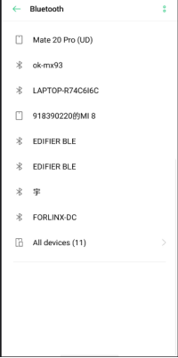
At the same time the printing message displays on the development board as follows, enter yes
[NEW] Device 14:16:9E:62:39:BD zzy
Request confirmation
[agent] Confirm passkey 083886 (yes/no): yes
Then click Bluetooth to pair, view and remove connected devices:
[zzy]# devices //View connected devices
Device 14:16:9E:62:39:BD zzy
[zzy]# remove 14:16:9E:62:39:BD //Remove devices
[bluetooth]# remove 14:16:9E:62:39:BD
[DEL] Device 14:16:9E:62:39:BD zzy
Device has been removed
3. Development board active pairing
In addition to passive pairing, it is also possible to send an active pairing request from the development board terminal
[bluetooth]# scan on //Search for discoverable Bluetooth
Discovery started
[CHG] Controller 30:7B:C9:4E:8E:D1 Discovering: yes
[NEW] Device 14:16:9E:62:39:BD zzy
[NEW] Device 70:AC:D6:3C:76:93 70-AC-D6-3C-76-93
[NEW] Device FC:E8:00:CF:42:E3 EDIFIER BLE
[NEW] Device C0:0B:06:01:0A:38 Mi Smart Band 5
[NEW] Device 2C:DB:07:C7:4F:F6 DESKTOP-VND9V1F
[CHG] Device 2C:DB:07:C7:4F:F6 RSSI: -60
[bluetooth]# scan off //Stop searching
Discovery stopped
[bluetooth]# pair 14:16:9E:62:39:BD //Pair bluetooth
Attempting to pair with 14:16:9E:62:39:BD
[CHG] Device 14:16:9E:62:39:BD Connected: yes
Request confirmation
[agent] Confirm passkey 732814 (yes/no): yes
[CHG] Device 14:16:9E:62:39:BD Modalias: bluetooth:v000Fp1200d1436
[CHG] Device 14:16:9E:62:39:BD UUIDs: 00001105-0000-1000-8000-00805f9b34fb
[CHG] Device 14:16:9E:62:39:BD UUIDs: 0000110a-0000-1000-8000-00805f9b34fb
[CHG] Device 14:16:9E:62:39:BD UUIDs: 0000110c-0000-1000-8000-00805f9b34fb
[CHG] Device 14:16:9E:62:39:BD UUIDs: 0000110e-0000-1000-8000-00805f9b34fb
[CHG] Device 14:16:9E:62:39:BD UUIDs: 00001112-0000-1000-8000-00805f9b34fb
[CHG] Device 14:16:9E:62:39:BD UUIDs: 00001115-0000-1000-8000-00805f9b34fb
[CHG] Device 14:16:9E:62:39:BD UUIDs: 00001116-0000-1000-8000-00805f9b34fb
[CHG] Device 14:16:9E:62:39:BD UUIDs: 0000111f-0000-1000-8000-00805f9b34fb
[CHG] Device 14:16:9E:62:39:BD UUIDs: 0000112f-0000-1000-8000-00805f9b34fb
[CHG] Device 14:16:9E:62:39:BD UUIDs: 00001132-0000-1000-8000-00805f9b34fb
[CHG] Device 14:16:9E:62:39:BD UUIDs: 00001200-0000-1000-8000-00805f9b34fb
[CHG] Device 14:16:9E:62:39:BD UUIDs: 00001800-0000-1000-8000-00805f9b34fb
[CHG] Device 14:16:9E:62:39:BD UUIDs: 00001801-0000-1000-8000-00805f9b34fb
[CHG] Device 14:16:9E:62:39:BD UUIDs: 00009955-0000-1000-8000-00805f9b34fb
[CHG] Device 14:16:9E:62:39:BD UUIDs: fa88c0d0-afac-11de-8a99-0800200c9a67
[CHG] Device 14:16:9E:62:39:BD ServicesResolved: yes
[CHG] Device 14:16:9E:62:39:BD Paired: yes
Pairing successful
At the same time, the pairing request appears on the mobile phone interface. Click the pairing button, and the board end prints and inputs yes. The pairing on the mobile phone end is successful.
4. Development board to receive documents
After successful pairing, you can use Bluetooth to send files to ok-mx93 on the mobile phone.

Received files are saved in the /tmp directory.
root@ok-mx93:~# ls /tmp/ -l
total 4848
-rw------- 1 root root 2783349 Nov 28 04:24 V21128-113836.mp4
-rw------- 1 root root 2173285 Nov 28 04:26 V21128-113851.mp4
-rw------- 1 root root 4 Nov 28 04:23 a-1.txt
drwx------ 3 root root 60 Nov 28 04:12 systemd-private-20d4637b1f714e57a55c3a86bfc8c0a5-bluetooth.service-7BzjIT
drwx------ 3 root root 60 Nov 28 04:12 systemd-private-20d4637b1f714e57a55c3a86bfc8c0a5-ninfod.service-JXVulf
drwx------ 3 root root 60 Nov 28 04:12 systemd-private-20d4637b1f714e57a55c3a86bfc8c0a5-rdisc.service-IR8ZR4
drwx------ 3 root root 60 Nov 28 04:12 systemd-private-20d4637b1f714e57a55c3a86bfc8c0a5-systemd-logind.service-gV7bXk
drwx------ 3 root root 60 Nov 28 04:12 systemd-private-20d4637b1f714e57a55c3a86bfc8c0a5-systemd-timesyncd.service-NTarpLAgent
5. The development board to send files
Similarly, the OK-MX9352-C can send files to a cell phone, test is as follows:
root@ok-mx93:~# bluetoothctl
Agent registered
[[CHG] Controller 30:7B:C9:4E:8E:D1 Pairable: yes
[zzy]# paired-devices //View the MAC of a device that has been paired
Device 14:16:9E:62:39:BD zzy
[zzy]# exit
root@ok-mx93:~# obexctl
[NEW] Client /org/bluez/obex
[obex]# connect 14:16:9E:62:39:BD //To connect the MAC of the Bluetooth that requires communication, please use paired devices in BluetoothCTL to check. Before connecting, confirm that the Bluetooth is powered on
Attempting to connect to 14:16:9E:62:39:BD
[NEW] Session /org/bluez/obex/client/session0 [default]
[NEW] ObjectPush /org/bluez/obex/client/session0
Connection successful
[14:16:9E:62:39:BD]# send /home/root/aaa.txt //Send files
Attempting to send /home/root/aaa.txt to /org/bluez/obex/client/session0
[NEW] Transfer /org/bluez/obex/client/session0/transfer0
Transfer /org/bluez/obex/client/session0/transfer0
Status: queued
Name: aaa.txt
Size: 4
Filename: /home/root/aaa.txt
Session: /org/bluez/obex/client/session0
[CHG] Transfer /org/bluez/obex/client/session0/transfer0 Status: complete
[DEL] Transfer /org/bluez/obex/client/session0/transfer0
[14:16:9E:62:39:BD]#
After that, the mobile phone will receive the file sent by the board.
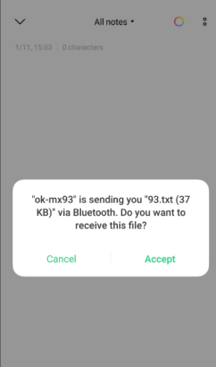
4.12 USB Interface Test
4.12.1 USB Mouse Test
Connect the usb mouse to the usb interface of the OK-MX93 platform, and the serial terminal prints the following information:
[ 354.290963] usb 2-1.2: new low-speed USB device number 7 using ci_hdrc
[ 354.534597] input: PixArt Lenovo USB Optical Mouse as /devices/platform/soc@0/4c200000.usb/ci_hdrc.1/usb2/2-1/2-1.2/2-1.2:1.0/0003:17EF:608D.0002/input/input4
[ 354.548969] hid-generic 0003:17EF:608D.0002: input: USB HID v1.11 Mouse [PixArt Lenovo USB Optical Mouse] on usb-ci_hdrc.1-1.2/input0
At this time, the arrow cursor appears on the screen, the mouse can work normally.
When the USB mouse is disconnected, the printout in the serial terminal is as follows:
[ 385.435212] usb 2-1.2: USB disconnect, device number 7
The arrow cursor on the screen disappears and the mouse is successfully removed.
4.12.2 USB2.0
Note:
To make sure the data is accurate, please restart the development board and test the reading speed;
Exit the USB flash driver mounting path and then plug and unplug the USB flash driver.
OK-MX93 supports a USB2.0 interface. Users can connect USB mouse, USB keyboard, U disk and other devices on the on-board USB HOST interface, and support the hot plug of the above devices. Here is an example of mounting a USB flash disk for demonstration:
The terminal prints information about the USB flash drive, and since many types of USB flash drives exist, the information displayed may vary:
Step 1:
After the development board is started, insert the USB disk into the USB HOST interface of the development board. Serial port information:
[ 53.527248] usb 1-1.2: new high-speed USB device number 6 using ci_hdrc
[ 53.744146] usb-storage 1-1.2:1.0: USB Mass Storage device detected
[ 53.752350] scsi host0: usb-storage 1-1.2:1.0
[ 54.784024] scsi 0:0:0:0: Direct-Access Mass Storage Device 1.00 PQ: 0 ANSI: 0 CCS
[ 54.952758] sd 0:0:0:0: [sda] 15523840 512-byte logical blocks: (7.95 GB/7.40 GiB)
[ 54.960859] sd 0:0:0:0: [sda] Write Protect is off
[ 54.966513] sd 0:0:0:0: [sda] No Caching mode page found
[ 54.971857] sd 0:0:0:0: [sda] Assuming drive cache: write through
[ 54.983123] sda: sda1
[ 54.992545] sd 0:0:0:0: [sda] Attached SCSI removable disk
Step 2:
View the mount directory:
root@ok-mx93:~# ls /run/media/
Boot-mmcblk0p1 boot-sda1
Step3:
View the contents of the USB flash drive:
root@ok-mx93:~# ls -l /run/media/boot-sda1
Write test:
root@ok-mx93:~# cd /run/media/boot-sda1
root@ok-mx93:~# dd if=/dev/zero of=./test bs=1M count=500 conv=fsync oflag=direct
500+0 records in
500+0 records out
524288000 bytes (524 MB, 500 MiB) copied, 65.1726 s, 8.0 MB/s
Read the test after restarting the development board:
root@ok-mx93:~# cd /run/media/boot-sda1
root@ok-mx93:~# dd if=./test of=/dev/null bs=1M iflag=direct
500+0 records in
500+0 records out
524288000 bytes (524 MB, 500 MiB) copied, 31.8918 s, 16.4 MB/s
4.12.3 OTG Test
The carrier board uses the USB 1 from the SoM as the USB 2.0 OTG, which can be used as the OTG interface.
OK-MX9352-C includes an OTG port (P25), Device mode can be used to connect to a PC, and Host mode can be used to plug in regular USB devices. When switchS1-8is set to on, the system sets the OTG interface to Host mode, and you can use the OTG-to-USB cable to insert a USB flash disk and other devices; when switch S1-8 is set to off, the system’s OTG interface is set to Device mode, and you can use the OTG cable to connect the OK-MX9352-C to a PC.
Host Mode:
Switch S1-8 is set to on, USB1 is connected to the MicroC to USB-A (female) cable to connect an external USB flash drive, the USB flash drive is recognized correctly and the printed information is as follows:
[ 48.236234] ci_hdrc ci_hdrc.0: EHCI Host Controller
[ 48.241206] ci_hdrc ci_hdrc.0: new USB bus registered, assigned bus number 2
[ 48.263059] ci_hdrc ci_hdrc.0: USB 2.0 started, EHCI 1.00
[ 48.269059] hub 2-0:1.0: USB hub found
[ 48.274296] hub 2-0:1.0: 1 port detected
[ 48.535047] usb 2-1: new high-speed USB device number 2 using ci_hdrc
[ 48.698217] usb-storage 2-1:1.0: USB Mass Storage device detected
[ 48.704828] scsi host0: usb-storage 2-1:1.0
[ 49.723896] scsi 0:0:0:0: Direct-Access Mass Storage Device 1.00 PQ: 0 ANSI: 0 CCS
[ 49.892633] sd 0:0:0:0: [sda] 15523840 512-byte logical blocks: (7.95 GB/7.40 GiB)
[ 49.900796] sd 0:0:0:0: [sda] Write Protect is off
[ 49.906400] sd 0:0:0:0: [sda] No Caching mode page found
[ 49.911753] sd 0:0:0:0: [sda] Assuming drive cache: write through
[ 49.923748] sda: sda1
[ 49.932373] sd 0:0:0:0: [sda] Attached SCSI removable disk
root@ok-mx93:~# ls /run/media/
Boot-mmcblk0p1 boot-sda1
Now that the USB flash drive has been recognized, you can perform operations on it.
Switch S1-8 is set to off, and USB0 exits HOST mode.
[ 54.820718] ci_hdrc ci_hdrc.0: remove, state 1
[ 54.825199] usb usb1: USB disconnect, device number 1
[ 54.830274] usb 1-1: USB disconnect, device number 2
[ 54.861716] ci_hdrc ci_hdrc.0: USB bus 1 deregistered
[ 54.941966] FAT-fs (sda1): unable to read boot sector to mark fs as dirty
[ 59.878957] ci_hdrc ci_hdrc.0: timeout waiting for 00000800 in OTGSC
[ 60.485385] usbmisc_imx 4c100200.usbmisc: VBUS is coming from a dedicated power supply.
Device Mode:
Set the switch S1-8 to off, connect USB0 to the MicroC to USB-A (male) cable, connect it to the PC host, use OTG as the USB2.0 DEVICE end for testing, and map the first partition of eMMC as the U disk and mount it on the PC.
Mount the module driver：
root@ok-mx93:~# modprobe g_mass_storage file=/dev/mmcblk0p1 removable=1
[ 55.030369] Mass Storage Function, version: 2009/09/11
[ 55.035552] LUN: removable file: (no medium)
[ 55.039961] LUN: removable file: /dev/mmcblk0p1
[ 55.044514] Number of LUNs=1
[ 55.047532] g_mass_storage gadget: Mass Storage Gadget, version: 2009/09/11
[ 55.054529] g_mass_storage gadget: userspace failed to provide iSerialNumber
[ 55.061580] g_mass_storage gadget: g_mass_storage ready
The PC recognizes that the mmcblk0p1 partition of the emmc on the OK-MX9352-C development board is as follows:
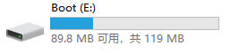
After opening, the file contents are as follows:
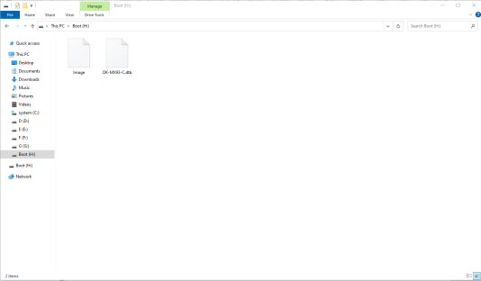
4.13 LCD Backlight Adjustment
Backlight level range (0–255), maximum level 255, 0 indicating turn off. Enter the system and enter the following command in the terminal to perform the backlight test.
Note: The RGB, LVDS, and mipi screens of the OK-MX93 use the same backlight interface.
1. View the current screen backlight value:
root@ok-mx93:~# cat /sys/class/backlight/display_backlight/brightness
80
2. Backlight is off:
root@ok-mx93:~# echo 0 >/sys/class/backlight/display_backlight/brightness
3. Backlight is on:
root@ok-mx93:~# echo 100 >/sys/class/backlight/display_backlight/brightness
4.14 Camera Test
OK-MX9352-C supports OV5645 MIPI cameras as well as UVC cameras. First, test the UVC camera. Insert the USB camera into the development board and it will automatically install UVC and add device nodes.
4.14.1 UVC Camera Test
Check whether the UVC Camera device node is identified; as shown in the following figure/dev/video0 node:
Note: When UVC and OV5645 are inserted at the same time, the device node of UVC Camera is/dev/video1. Please note the replacement.
root@ok-mx93:~# v4l2-ctl --list-devices
[ 22.100156] usb 2-1.2: reset high-speed USB device number 4 using ci_hdrc
UVC Camera (046d:0825) (usb-ci_hdrc.1-1.2):
/dev/video0
/dev/video1
/dev/media0
View the formats and resolutions supported by the camera:
root@ok-mx93:~# v4l2-ctl --list-formats-ext -d /dev/video0
[ 44.060157] usb 2-1.2: reset high-speed USB device number 4 using ci_hdrc
ioctl: VIDIOC_ENUM_FMT
Type: Video Capture
[0]: 'YUYV' (YUYV 4:2:2)
Size: Discrete 640x480
Interval: Discrete 0.033s (30.000 fps)
Interval: Discrete 0.040s (25.000 fps)
Interval: Discrete 0.050s (20.000 fps)
Interval: Discrete 0.067s (15.000 fps)
Interval: Discrete 0.100s (10.000 fps)
Interval: Discrete 0.200s (5.000 fps)
Size: Discrete 160x120
......
1. Camera preview:
root@ok-mx93:~# gst-launch-1.0 v4l2src device=/dev/video0 io-mode=2 ! \
video/x-raw,format=YUY2,width=640,height=480,framerate=30/1 ! \
autovideosink
[ 183.497378] usb 1-1.1: reset high-speed USB device number 5 using xhci-hcd
Setting pipeline to PAUSED ...
Pipeline is live and does not need PREROLL ...
Setting pipeline to PLAYING ...
New clock: GstSystemClock
You can see a preview of the camera on the screen.
2. Camera to Take Pictures
root@ok-mx93:~# gst-launch-1.0 v4l2src device=/dev/video0 io-mode=2 num-buffers=1 ! \
video/x-raw,format=YUY2,width=640,height=480,framerate=30/1 ! jpegenc ! filesink \
location=pic.jpeg
Setting pipeline to PAUSED ...
Pipeline is live and does not need PREROLL ...
Pipeline is PREROLLED ...
Setting pipeline to PLAYING ...
New clock: GstSystemClock
Redistribute latency...
Got EOS from element "pipeline0".
Execution ended after 0:00:01.183575708
Setting pipeline to NULL ...
Freeing pipeline ...
root@ok-mx93:~# ls
pic.jpeg
Then copy pic.jpeg to Windows and open it to see the captured photo.
4.14.2 MIPI Camera Test
The test method of the OV5645 Mipi camera is basically the same as that of the UVC Camera. The board supports 1 x OV5645 Mipi camera.
First, confirm the device node of the 5645.
root@ok-mx93:~# v4l2-ctl --list-devices
mxc-isi-cap (platform:4ae40000.isi:cap_devic):
/dev/video0
FSL Capture Media Device (platform:mxc-md):
/dev/media0
View the formats and resolutions supported by the camera:
root@ok-mx93:~# v4l2-ctl --list-formats-ext -d /dev/video0
ioctl: VIDIOC_ENUM_FMT
Type: Video Capture Multiplanar
[0]: 'RGBP' (16-bit RGB 5-6-5)
Size: Discrete 1280x960
Size: Discrete 1920x1080
Size: Discrete 2592x1944
[1]: 'RGB3' (24-bit RGB 8-8-8)
Size: Discrete 1280x960
Size: Discrete 1920x1080
Size: Discrete 2592x1944
[2]: 'BGR3' (24-bit BGR 8-8-8)
Size: Discrete 1280x960
Size: Discrete 1920x1080
Size: Discrete 2592x1944
[3]: 'YUYV' (YUYV 4:2:2)
Size: Discrete 1280x960
Size: Discrete 1920x1080
Size: Discrete 2592x1944
[4]: 'YUV4' (32-bit A/XYUV 8-8-8-8)
Size: Discrete 1280x960
Size: Discrete 1920x1080
Size: Discrete 2592x1944
[5]: 'NV12' (Y/CbCr 4:2:0)
Size: Discrete 1280x960
Size: Discrete 1920x1080
Size: Discrete 2592x1944
[6]: 'NM12' (Y/CbCr 4:2:0 (N-C))
Size: Discrete 1280x960
Size: Discrete 1920x1080
Size: Discrete 2592x1944
[7]: 'YM24' (Planar YUV 4:4:4 (N-C))
Size: Discrete 1280x960
Size: Discrete 1920x1080
Size: Discrete 2592x1944
[8]: 'XR24' (32-bit BGRX 8-8-8-8)
Size: Discrete 1280x960
Size: Discrete 1920x1080
Size: Discrete 2592x1944
[9]: 'AR24' (32-bit BGRA 8-8-8-8)
Size: Discrete 1280x960
Size: Discrete 1920x1080
Size: Discrete 2592x1944
1. Camera preview:
root@ok-mx93:~# gst-launch-1.0 v4l2src device=/dev/video0 io-mode=4 ! \
video/x-raw, format=YUY2, width=1920, height=1080,framerate=30/1 ! \
autovideosink
Setting pipeline to PAUSED ...
Pipeline is live and does not need PREROLL ...
Pipeline is PREROLLED ...
Setting pipeline to PLAYING ...
New clock: GstSystemClock
[ 228.930827] mxc-mipi-csi2.0: format: 0x2008
[ 228.940056] bypass csc
[ 228.942419] input fmt YUV4
[ 228.945414] output fmt YUYV
[ 229.279201] dwc-mipi-csi2-host 4ae00000.csi: enter enable=1
Redistribute latency...
^Chandling interrupt. //CTRL+C停止预览
Interrupt: Stopping pipeline ...
Execution[ 236.026798] dwc-mipi-csi2-host 4ae00000.csi: enter enable=0
ended after 0:00:07.106646087
Setting pipeline to NULL ...
Total showed frames (152), playing for (0:00:07.105655087), fps (21.391).
Freeing pipeline ...
You can see a preview of the camera on the screen.
2. Camera to Take Pictures
root@ok-mx93:~# gst-launch-1.0 v4l2src device=/dev/video0 io-mode=4 num-buffers=1 ! \
video/x-raw,format=YUY2,width=1920,height=1080,framerate=30/1 ! \
jpegenc ! \
filesink location=pic.jpeg
Setting pipeline to PAUSED ...
Pipeline is live and does not need PREROLL ...
Pipeline is PREROLLED ...
Setting pipeline to PL[ 361.129416] mxc-mipi-csi2.0: format: 0x2008
AYING ...
New clock: GstSystemClock
[ 361.139733] bypass csc
[ 361.142153] input fmt YUV4
[ 361.145302] output fmt YUYV
[ 361.471180] dwc-mipi-csi2-host 4ae00000.csi: enter enable=1
Redistribute latency...
Got EOS from ele[ 362.149529] dwc-mipi-csi2-host 4ae00000.csi: enter enable=0
ment "pipeline0".
Execution ended after 0:00:01.027593375
Setting pipeline to NULL ...
Freeing pipeline ...
root@ok-mx93:~# ls
pic.jpeg
Then copy pic.jpeg to Windows and open it to see the captured photo.
4.15 Audio Test
4.15.1 Audio Playback Test
1. Use gplay to play audio
root@ok-mx93:~# aplay /home/forlinx/audio/30s.wav
2. Use gst-launch to play audio
Gst-launch is a common debugging tool for developers in the development phase. Compared with Gplay, it is more flexible and relatively complex to use.
root@ok-mx93:~# gst-launch-1.0 filesrc location=/home/forlinx/audio/30s.mp3 ! id3demux ! \
mpegaudioparse ! decodebin ! audioconvert ! audioresample ! alsasink
4.15.2 Record Test
Recording, testing with the arecord command
Before the recording test, please insert the prepared microphone into the mic interface and enter the following command in the serial port of the development board:
root@ok-mx93:~# arecord -c 2 -r 44100 -f cd mic.wav
[ 522.407507] nau8822 0-001a: pll_int=7 pll_frac=86c226 mclk_scaler=2 pre_factor=1
Recording WAVE 'mic.wav' : Signed 16 bit Little Endian, Rate 44100 Hz, Stereo
^CAborted by signal Interrupt... //ctrl+c 停止录音
You can start recording by pressing Ctrl + C to stop the recording, press Ctrl + C again. Once the recording is stopped, you can find the generated audio file “mic.wav” in the current directory.
4.15.3 Configuring the Sound Card with Amixer
View settable item.
root@ok-mx93:~# amixer scontents
Simple mixer control 'Headphone',0
Capabilities: volume pswitch
Playback channels: Front Left - Front Right
Capture channels: Front Left - Front Right
Limits: 0 - 63
Front Left: 63 [100%] [6.00dB] Playback [on]
Front Right: 63 [100%] [6.00dB] Playback [on]
Simple mixer control 'Headphone ZC',0
Capabilities: pswitch
Playback channels: Front Left - Front Right
Mono:
Front Left: Playback [off]
Front Right: Playback [off]
Simple mixer control 'Speaker',0
Capabilities: volume pswitch
Playback channels: Front Left - Front Right
Capture channels: Front Left - Front Right
Limits: 0 - 63
Front Left: 57 [90%] [0.00dB] Playback [on]
Front Right: 57 [90%] [0.00dB] Playback [on]
......
Enable the speaker.
root@ok-mx93:~# amixer sset Speaker on
Simple mixer control 'Speaker',0
Capabilities: volume pswitch
Playback channels: Front Left - Front Right
Capture channels: Front Left - Front Right
Limits: 0 - 63
Front Left: 10 [16%] [-47.00dB] Playback [on]
Front Right: 10 [16%] [-47.00dB] Playback [on]
Configure the speaker volume.
root@ok-mx93:~# amixer sset Speaker 63,63
Simple mixer control 'Speaker',0
Capabilities: volume pswitch
Playback channels: Front Left - Front Right
Capture channels: Front Left - Front Right
Limits: 0 - 63
Front Left: 63 [100%] [6.00dB] Playback [on]
Front Right: 63 [100%] [6.00dB] Playback [on]
root@ok-mx93:~# amixer sset 'DAC Limiter' 12
Simple mixer control 'DAC Limiter',0
Capabilities: volume volume-joined pswitch pswitch-joined
Playback channels: Mono
Capture channels: Mono
Limits: 0 - 12
Mono: 12 [100%] [12.00dB] Playback [off]
root@ok-mx93:~# amixer sset 'Right Output Mixer LDAC' playback on
Simple mixer control 'Right Output Mixer LDAC',0
Capabilities: pswitch pswitch-joined
Playback channels: Mono
Mono: Playback [on]
root@ok-mx93:~# amixer sset 'Right Output Mixer RDAC' playback on
Simple mixer control 'Right Output Mixer RDAC',0
Capabilities: pswitch pswitch-joined
Playback channels: Mono
Mono: Playback [on]
root@ok-mx93:~# amixer sset 'Left Output Mixer RDAC' playback on
Simple mixer control 'Left Output Mixer RDAC',0
Capabilities: pswitch pswitch-joined
Playback channels: Mono
Mono: Playback [on]
root@ok-mx93:~# amixer sset 'Left Output Mixer LDAC' playback on
Simple mixer control 'Left Output Mixer LDAC',0
Capabilities: pswitch pswitch-joined
Playback channels: Mono
Mono: Playback [on]
Disable the speaker.
root@ok-mx93:~# amixer sset Speaker off
Simple mixer control 'Speaker',0
Capabilities: volume pswitch
Playback channels: Front Left - Front Right
Capture channels: Front Left - Front Right
Limits: 0 - 63
Front Left: 10 [16%] [-47.00dB] Playback [off]
Front Right: 10 [16%] [-47.00dB] Playback [off]
Enable the earphone.
root@ok-mx93:~# amixer sset Headphone on
Simple mixer control 'Headphone',0
Capabilities: volume pswitch
Playback channels: Front Left - Front Right
Capture channels: Front Left - Front Right
Limits: 0 - 63
Front Left: 63 [100%] [6.00dB] Playback [on]
Front Right: 63 [100%] [6.00dB] Playback [on]
Configure the headphone volume.
root@ok-mx93:~# amixer sset Headphone 50,50
Simple mixer control 'Headphone',0
Capabilities: volume pswitch
Playback channels: Front Left - Front Right
Capture channels: Front Left - Front Right
Limits: 0 - 63
Front Left: 50 [79%] [-7.00dB] Playback [on]
Front Right: 50 [79%] [-7.00dB] Playback [on]
4.16 TF Card Test
Note:
To make sure the data is accurate, please restart the development board and test the reading speed;
Exit the TF card mount path and then plug and unplug the TF card.
The OK - MX9352 - C platform supports High Speed, SDR12, SDR25, SDR50, SDR104, DDR50 and other modes for the TF card, with a working bit - width of 4. Test the read and write speeds of the TF card, taking the read and write operations on the FAT32 file system as an example.
Insert the TF card into the TF card slot on the development board’s carrier board. In normal circumstances, the development board’s terminal will display the following information:
[ 468.531700] mmc1: host does not support reading read-only switch, assuming write-enable
[ 468.543574] mmc1: new ultra high speed DDR50 SDHC card at address e624
[ 468.555631] mmcblk1: mmc1:e624 SL08G 7.40 GiB
[ 468.573200] mmcblk1: p1
By default, the TF card is mounted to the file system/run/media/directory
View the mount directory:
root@ok-mx93:~ # ls /run/media //List files in the/run/media directory
Boot-mmcblk0p1 boot-mmcblk1p1
root@ok-mx93:~ # mount | grep mmcblk1 //Find information related to mmcblk1 in the mounting information
/dev/mmcblk1p1 on /run/media/boot-mmcblk1p1 type vfat
(rw,relatime,gid=6,fmask=0007,dmask=0007,allow_utime=0020,codepage=437,iocharset=iso8859-1,shortname=mixed,errors=remount-ro)
Write test:
root@ok-mx93:~# dd if=/dev/zero of=/run/media/boot-mmcblk1p1/test bs=1M count=500 conv=fsync oflag=direct
500+0 records in
500+0 records out
524288000 bytes (524 MB, 500 MiB) copied, 49.8258 s, 10.5 MB/s
Read test：
root@ok-mx93:~# dd if=/run/media/boot-mmcblk1p1/test of=/dev/null bs=1M iflag=direct
500+0 records in
500+0 records out
524288000 bytes (524 MB, 500 MiB) copied, 11.5303 s, 45.5 MB/s
TF card uninstallation:
root@ok-mx93:~# umount /run/media/boot-mmcblk1p1
4.17 EMMC Test
Note: To ensure the accuracy of the data, please restart the development board to test the reading speed.
OK-MX9352-C platform eMMC runs in HS400 mode by default, and the working bit width is 8. The following is a simple test of the reading and writing speed of eMMC, taking the reading and writing of ext4 file system as an example.
Write test:
root@ok-mx93:~# dd if=/dev/zero of=/test bs=1M count=500 conv=fsync
500+0 records in
500+0 records out
524288000 bytes (524 MB, 500 MiB) copied, 25.5754 s, 20.5 MB/s
Perform read test after restart:
root@ok-mx93:~# dd if=/test of=/dev/null bs=1M count=500 conv=sync
500+0 records in
500+0 records out
524288000 bytes (524 MB, 500 MiB) copied, 2.38942 s, 219 MB/s
4.18 Ethernet Configuration
OK-MX9352-C is equipped with two onboard Gigabit Ethernet ports. When connected to the network using an Ethernet cable, upon startup, eth0 on the OK-MX9352-C development board is set to the default IP address 192.168.0.232, while eth1 is set to automatically obtain an IP address.
Here is how to set a fixed IP, taking eth0 as an example:
Development Board IP: 192.168.0.232
Router IP: 192.168.0.1
Subnet mask: 255.255.255.0
When the development board is powered on, the configuration file of the development board IP is shown in the following figure:
root@ok-mx93:~# vi /etc/systemd/network/10-eth.network
[Match]
Name=eth0
KernelCommandLine=!root=/dev/nfs
[Network]
Address=192.168.0.232/24
Gateway=192.168.0.1
DNS=192.168.0.1
ConfigureWithoutCarrier=true
IgnoreCarrierLoss=true
Among:
Name is used to specify a network card that requires a fixed IP;
Address is used to specify the IP address and subnet mask that needs to be fixed;
Gateway is used to specify the gateway;
DNS is used to specify domain name resolution servers.
If eth1 also needs to be set to a static IP, you need to modify /etc/systemd/network/15-eth.
root@ok-mx93:~# vi /etc/systemd/network/15-eth.network
[Match]
Name=eth1
KernelCommandLine=!root=/dev/nfs
[Network]
Address=192.168.1.232/24
Gateway=192.168.1.1
DNS=192.168.1.1
ConfigureWithoutCarrier=true
IgnoreCarrierLoss=true
Use automatic IP acquisition: delete the/etc/systemd/network/10 eth.network, or modify the configuration file as shown in the following figure.
root@ok-mx93:~# vi /etc/systemd/network/10-eth.network
[Match]
Name=eth0
KernelCommandLine=!root=/dev/nfs
[Network]
DHCP=yes
4.19 Web Services
The OK-MX93 board comes with the lighttpd (Web server) pre-installed，and the lighttpd service is automatically started at boot time. Enter the IP address of the board into the PC browser (the IP address should be in the same network segment) to browse the web pages in the webserver of the board, as shown in the following figure:
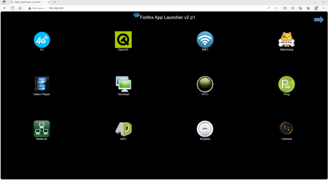
4.20 4G
OK-MX93 supports 4G modules EC20 and EC25. Before starting the development board, connect the 4G module (P21PCIE slot on the carrier board) and insert the SIM card (back of the carrier board) to start the development board.
Note:
The 4G module needs to be connected to the antenna, and the EC20 and EC25 have only one antenna interface;
Pay attention to the insertion direction of the SIM card. The orientation of the SIM card should be consistent with the silk screen of the carrier board.
EC25 Module Test：
Connect the EC25 module to the OK-MX93 platform. After power-up, the USB status can be viewed through the lsusb command.
root@OK-MX93:~# lsusb
Bus 001 Device 005: ID 0bda:d723 Realtek Semiconductor Corp. 802.11n WLAN Adapter
Bus 001 Device 004: ID 2c7c:0125 Quectel Wireless Solutions Co., Ltd. EC25 LTE modem
Bus 001 Device 003: ID 04e2:1414 Exar Corp.
Bus 001 Device 002: ID 1a40:0101 Terminus Technology Inc. Hub
Bus 001 Device 001: ID 1d6b:0002 Linux Foundation 2.0 root hub
Take the insertion of mobile SIM card to test 4G Internet access as an example to test whether it can connect to the external network:
root@OK-MX93:~# fltest_quectel.sh
[ 573.190645] imx-dwmac 428a0000.ethernet eth1: Link is Down
[ 573.197342] imx-dwmac 428a0000.ethernet eth1: FPE workqueue stop
[ 573.300954] imx-dwmac 428a0000.ethernet eth1: PHY [stmmac-1:01] driver [RTL8211F Gigabit Ethernet] (irq=POLL)
[ 573.310884] imx-dwmac 428a0000.ethernet eth1: configuring for phy/rgmii-id link mode
[10-25_09:31:33:029] Quectel_QConnectManager_Linux_V1.6.0.24
[10-25_09:31:33:030] Find /sys/bus/usb/devices/1-1.3 idVendor=0x2c7c idProduct=0x125, bus=0x001, dev=0x004
[10-25_09:31:33:030] Auto find qmichannel = /dev/qcqmi0
[10-25_09:31:33:030] Auto find usbnet_adapter = usb0
[10-25_09:31:33:031] netcard driver = GobiNet, driver version = V1.6.2.14
[10-25_09:31:33:031] Modem works in QMI mode
[10-25_09:31:33:051] Get clientWDS = 7
[10-25_09:31:33:083] Get clientDMS = 8
[10-25_09:31:33:114] Get clientNAS = 9
[10-25_09:31:33:148] Get clientUIM = 10
[10-25_09:31:33:179] Get clientWDA = 11
[10-25_09:31:33:211] requestBaseBandVersion EC20CEHCR06A02M1G
[10-25_09:31:33:339] requestGetSIMStatus SIMStatus: SIM_READY
[10-25_09:31:33:371] requestGetProfile[1] 3gnet///0
[10-25_09:31:33:403] requestRegistrationState2 MCC: 460, MNC: 1, PS: Attached, DataCap: LTE
[10-25_09:31:33:435] requestQueryDataCall IPv4ConnectionStatus: DISCONNECTED
[10-25_09:31:33:435] ifconfig usb0 0.0.0.0
[10-25_09:31:33:444] ifconfig usb0 down
[10-25_09:31:33:498] requestSetupDataCall WdsConnectionIPv4Handle: 0x86b4bfb0
[10-25_09:31:33:659] ifconfig usb0 up
[10-25_09:31:33:669] busybox udhcpc -f -n -q -t 5 -i usb0
udhcpc: started, v1.35.0
[ 574.349044] IPv6: ADDRCONF(NETDEV_CHANGE): usb0: link becomes ready
udhcpc: broadcasting discover
udhcpc: broadcasting select for 10.57.19.80, server 10.57.19.81
udhcpc: lease of 10.57.19.80 obtained from 10.57.19.81, lease time 7200
RTNETLINK answers: File exists
[10-25_09:31:34:098] /etc/udhcpc.d/50default: Adding DNS 123.123.123.123
[10-25_09:31:34:098] /etc/udhcpc.d/50default: Adding DNS 123.123.123.124
Ping test：
root@OK-MX93:~# ping www.baidu.com
PING baidu.com (39.156.66.10) 56(84) bytes of data.
64 bytes from 39.156.66.10 (39.156.66.10): icmp_seq=1 ttl=50 time=27.7 ms
64 bytes from 39.156.66.10 (39.156.66.10): icmp_seq=2 ttl=50 time=24.0 ms
64 bytes from 39.156.66.10 (39.156.66.10): icmp_seq=3 ttl=50 time=25.9 ms
64 bytes from 39.156.66.10 (39.156.66.10): icmp_seq=4 ttl=50 time=20.1 ms
64 bytes from 39.156.66.10 (39.156.66.10): icmp_seq=5 ttl=50 time=24.9 ms
64 bytes from 39.156.66.10 (39.156.66.10): icmp_seq=6 ttl=50 time=20.8 ms
64 bytes from 39.156.66.10 (39.156.66.10): icmp_seq=7 ttl=50 time=22.4 ms
64 bytes from 39.156.66.10 (39.156.66.10): icmp_seq=8 ttl=50 time=30.9 ms
^C
--- baidu.com ping statistics ---
8 packets transmitted, 8 received, 0% packet loss, time 7010ms
rtt min/avg/max/mdev = 20.064/24.600/30.946/3.378 ms
4.21 Adding Boot - up Scripts
4.21.1 Temporary Adding a Self - starting Script
Create a shell script:
root@ok-mx93:~# vi /usr/bin/test.sh
The reference content is as follows (the user can modify it according to the actual situation).
#!/bin/sh
echo “-------------hello forlinx-----------” > /dev/ttyLP0
After the modification, save and exit, add execution rights to the script
root@ok-mx93:~# chmod +x /usr/bin/test.sh
Add before exit 0 in the/etc/autorun.sh
/usr/bin/test.sh &
Save and Exit
4.21.2 Adding a Boot Script to the Flashed Image
Add a startup script during image flashing, you need to modify the source code in the development environment. Here are the steps to follow:
Enter the OKMX93-linux-sdk source code package and create a script under the path: OKMX93-linux-sdk/OKMX93-linux-fs/rootfs/usr/bin. The reference format is as follows, and the user can modify it according to the actual situation:
#!/bin/sh
echo “-------------hello forlinx-----------” > /dev/ttyLP0
Use the chmod +x test.shcommand to add execution permissions to the file.
Add the newly created shell script to the OK-MX93 root file system autorun.sh file.
Path in source code of autorun.sh：OKMX93-linux-fs/rootfs/etc/autorun.sh.
Add a shell statement to the autorun.sh file before exit 0:/usr/bin/test.sh&.
Recompile and package.
4.21.3 Modifying the Startup Sequence of the Self-startup Script
If the self-starting script needs to rely on other executable programs, the user can modify the starting sequence of the self-starting script.
Take the boot QT program as an example.
Qt programs depend on the weston service, so force the self-starting service to start after the weston service
root@ok-mx93:~# vi /lib/systemd/system/autorun.service
[Unit]
Description=autorun
After=basic.service
[Service]
ExecStart=/etc/autorun.sh
[Install]
WantedBy=multi-user.target
Add ‘weston.service’ after ‘basic.service’ in the ‘After=’ section.
[Unit]
Description=autorun
After=basic.service weston.service
[Service]
ExecStart=/etc/autorun.sh
[Install]
WantedBy=multi-user.target
Save and exit to force the autostart script to start behind the weston service.
Qt depends on the QT environment variable. Add the QT environment variable to the bootstrap script
root@ok-mx93:~# vi /etc/autorun.sh
#! /bin/sh
# qt env //Add qt environment variables
. /etc/profile.d/weston.sh
. /etc/profile.d/qt6.sh
# user command //Qt command to be started
/usr/share/examples/gui/analogclock/gui_analogclock
exit 0
At this point, you can start the QT program.
4.22 SQLite3 Test
SQLite3 is a lightweight database management system that adheres to ACID principles, making it a resource-efficient relational database management system. The OK-MX9352-C development board is ported with version 3.38.5 of sqlit3.
root@ok-mx93:~# sqlite3
SQLite version 3.38.5 2022-05-06 15:25:27
Enter ".help" for usage hints.
Connected to a transient in-memory database.
Use ".open FILENAME" to reopen on a persistent database.
sqlite> create table tbl1 (one varchar(10), two smallint); // Create table tbl1
sqlite> insert into tbl1 values('hello!', 10); // Insert the data hello!|10 into table tbl1
sqlite> insert into tbl1 values('goodbye', 20); // Insert the data goodbye|20 into table tbl1
sqlite> select * from tbl1; // Query the contents of table tbl1
hello!|10
goodbye|20
sqlite> delete from tbl1 where one = 'hello!'; // Delete the data
sqlite> select * from tbl1; // Query the contents of table tbl1
goodbye|20
sqlite> .quit
4.23 Closing the Desktop
root@ok-mx93:~# systemctl stop matrix //Close the desktop
root@ok-mx93:~# systemctl start matrix //Open the desktop
4.24 GPIO Test
Led out gpio from the OK-MX9352-C carrier board P6, as shown in the following figure.
Note: GPIO pins on P6 conflict with the RGB display pins.
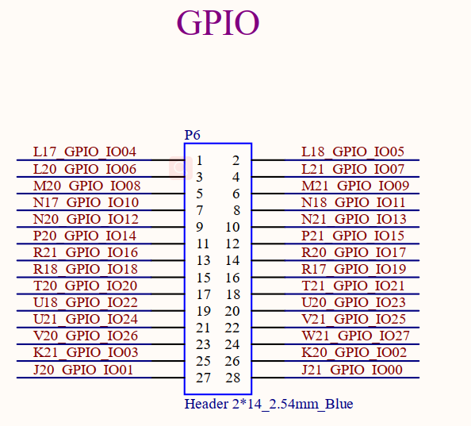
Since the GPIO pins on P6 are already occupied by the RGB display driver, change the ‘’status’’ of the ‘’board_gpio’’ in the OK-MX9352-C.dts file to ‘’okay’’. After recompiling and replacing the device tree, you can proceed with the following tests. Please note that during this time, the RGB screen should not be used. Please either disable the display or switch to using LVDS or MIPI display.
Note: The OK-MX93 kernel has abandoned the sysfs GPIO configuration interface and now uses the gpiochip device under the “dev” directory to configure GPIO.
To view all GPIO devices;
root@ok-mx93:~# gpiodetect
gpiochip0 [43810080.gpio] (32 lines)
gpiochip1 [43820080.gpio] (32 lines)
gpiochip2 [43830080.gpio] (32 lines)
gpiochip3 [47400080.gpio] (32 lines)
From the device tree pinout, the GPIO corresponding to P6 is gpio@43810080, gpiochip0, in the device tree;
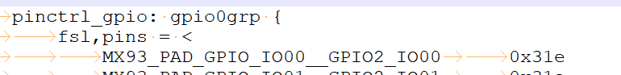
As you can see from the schematic, GPIO0 is pin 28 of P6. Use the following command to set GPIO0 high.
root@ok-mx93:~# gpioset -c gpiochip0 0=1
Use a multimeter to measure pin 28 of P6, which is high, indicating that the GPIO test was successful.
The following commands can be used to obtain the GPIO pin status:
root@ok-mx93:~# gpioget -c gpiochip0 0
"0"=inactive
Set GPIO0 low using the following command:.
root@ok-mx93:~# gpioset -c gpiochip0 0=0
Use a multimeter to measure the 28th pin of P6, which is low level, indicating that the GPIO test is successful.
Other GPIO pins are tested in the same way
4.25 Key Test
There is a user key (K1) on the OK-MX9352-C carrier board.
The keys are used as follows:
View the input event for a key;
root@ok-mx93:~# cat /proc/bus/input/devices
I: Bus=0019 Vendor=0000 Product=0000 Version=0000
N: Name="44440000.bbnsm:pwrkey"
P: Phys=bbnsm-pwrkey/input0
S: Sysfs=/devices/platform/soc@0/44000000.bus/44440000.bbnsm/44440000.bbnsm:pwrkey/input/input0
U: Uniq=
H: Handlers=kbd event0
B: PROP=0
B: EV=3
B: KEY=10000000000000 0
I: Bus=0019 Vendor=0001 Product=0001 Version=0100
N: Name="keys"
P: Phys=gpio-keys/input0
S: Sysfs=/devices/platform/keys/input/input1
U: Uniq=
H: Handlers=kbd event1
B: PROP=0
B: EV=3
B: KEY=8000000000 0
Key test.
root@ok-mx93:~# evtest /dev/input/event1
Input driver version is 1.0.1
Input device ID: bus 0x19 vendor 0x1 product 0x1 version 0x100
Input device name: "keys"
Supported events:
Event type 0 (EV_SYN)
Event type 1 (EV_KEY)
Event code 103 (KEY_UP)
Properties:
Testing ... (interrupt to exit)
Event: time 1664183390.337706, type 1 (EV_KEY), code 103 (KEY_UP), value 1
Event: time 1664183390.337706, -------------- SYN_REPORT ------------
Event: time 1664183390.511901, type 1 (EV_KEY), code 103 (KEY_UP), value 0
Event: time 1664183390.511901, -------------- SYN_REPORT ------------
At this time, press the button and lift the button to report the corresponding information.
4.26 NPU Test
OK-MX93 integrates a 0.5TOPS NPU, which can accelerate machine learning inference.
The filesystem contains an object recognition example for tensorflow-lite-2.9.1.
1. The CPU testing method is as follows:
root@ok-mx93:~# cd /usr/bin/tensorflow-lite-2.11.1/examples/
root@ok-mx93: /usr/bin/tensorflow-lite-2.11.1/examples# ./label_image -i grace_hopper.bmp
INFO: Loaded model ./mobilenet_v1_1.0_224_quant.tflite
INFO: resolved reporter
INFO: invoked
INFO: average time: 143.771 ms
INFO: 0.764706: 653 military uniform
INFO: 0.121569: 907 Windsor tie
INFO: 0.0156863: 458 bow tie
INFO: 0.0117647: 466 bulletproof vest
INFO: 0.00784314: 835 suit
The -i parameter specifies the image path to be recognized.
The categories of objects that can be recognized are obtained by looking at the file /usr/bin/tensorflow-lite-2.9.1/examples/labels.txt.
root@ok-mx93:~# vi /usr/bin/tensorflow-lite-2.11.1/examples/labels.txt
background
tench
goldfish
great white shark
tiger shark
hammerhead
2. The NPU testing method is as follows:
root@ok-mx93:~# cd /usr/bin/tensorflow-lite-2.11.1/examples/
root@ok-mx93:/usr/bin/tensorflow-lite-2.11.1/examples# vela mobilenet_v1_1.0_224_quant.tflite
Network summary for mobilenet_v1_1.0_224_quant
Accelerator configuration Ethos_U65_256
System configuration internal-default
Memory mode internal-default
Accelerator clock 1000 MHz
Design peak SRAM bandwidth 16.00 GB/s
Design peak DRAM bandwidth 3.75 GB/s
Total SRAM used 370.91 KiB
Total DRAM used 3621.95 KiB
CPU operators = 0 (0.0%)
NPU operators = 60 (100.0%)
Average SRAM bandwidth 4.73 GB/s
Input SRAM bandwidth 11.96 MB/batch
Weight SRAM bandwidth 9.70 MB/batch
Output SRAM bandwidth 0.00 MB/batch
Total SRAM bandwidth 21.76 MB/batch
Total SRAM bandwidth per input 21.76 MB/inference (batch size 1)
Average DRAM bandwidth 2.13 GB/s
Input DRAM bandwidth 1.52 MB/batch
Weight DRAM bandwidth 3.23 MB/batch
Output DRAM bandwidth 5.06 MB/batch
Total DRAM bandwidth 9.82 MB/batch
Total DRAM bandwidth per input 9.82 MB/inference (batch size 1)
Neural network macs 572406226 MACs/batch
Network Tops/s 0.25 Tops/s
NPU cycles 3889054 cycles/batch
SRAM Access cycles 1019891 cycles/batch
DRAM Access cycles 1676662 cycles/batch
On-chip Flash Access cycles 0 cycles/batch
Off-chip Flash Access cycles 0 cycles/batch
Total cycles 4602254 cycles/batch
Batch Inference time 4.60 ms, 217.28 inferences/s (batch size 1)
root@ok-mx93:/usr/bin/tensorflow-lite-2.11.1/examples# ./label_image -m output/mobilenet_v1_1.0_224_quant_vela.tflite -i grace_hopper.bmp -l labels.txt --external_delegate_path=/usr/lib/libethosu_delegate.so
INFO: Loaded model output/mobilenet_v1_1.0_224_quant_vela.tflite
INFO: resolved reporter
INFO: [ 84.512503] remoteproc remoteproc0: powering up imx-rproc
Ethosu delegate: device_name set[ 84.519840] remoteproc remoteproc0: Booting fw image ethosu_firmware, size 242424
to /dev/ethosu0.
INFO: Ethosu delegate: cache_file_path set to .
INFO: Ethosu delegate: timeout set to 60000000000.
INFO: Ethosu delegate: enable_cycle_counter set to 0.
INFO: Ethosu delegate: enable_profiling set to 0.
INFO: Ethosu delegate: profiling_buffer_size set to 2048.
INFO: Ethosu delegate: pmu_event0 set to 0.
INFO: Ethosu delegate: pmu_event1 set to 0.
INFO: Ethosu delegate: pmu_event2 set to 0.
INFO: Ethosu delegate: pmu_event3 set to 0.
EXTERNAL delegate created.
INFO: EthosuDelegate: 1 nodes delegated out of 1 nodes with 1 partitions.
[ 85.062832] rproc-virtio rproc-virtio.0.auto: assigned reserved memory node vdevbuffer@a4020000
[ 85.072778] virtio_rpmsg_bus virtio0: rpmsg host is online
[ 85.080864] rproc-virtio rproc-virtio.0.auto: registered virtio0 (type 7)
[ 85.089142] rproc-virtio rproc-virtio.1.auto: assigned reserved memory node vdevbuffer@a4020000
[ 85.100723] virtio_rpmsg_bus virtio1: rpmsg host is online
[ 85.106365] virtio_rpmsg_bus virtio1: creating channel rpmsg-ethosu-channel addr 0x1e
[ 85.118832] rproc-virtio rproc-virtio.1.auto: registered virtio1 (type 7)
[ 85.126144] remoteproc remoteproc0: remote processor imx-rproc is now up
INFO: Applied EXTERNAL delegate.
INFO: invoked
INFO: average time: 3.882 ms
INFO: 0.780392: 653 military uniform
INFO: 0.105882: 907 Windsor tie
INFO: 0.0156863: 458 bow tie
INFO: 0.0117647: 466 bulletproof vest
INFO: 0.00784314: 835 suit
9352 runs at just 3.81 ms with NPU.
4.27 Temperature Test
View the temperature value:
root@ok-mx93:~# cat /sys/class/thermal/thermal_zone0/temp
45350
The temperature value is 45.350°C.
4.28 Video Playback Test
Execute the following command to perform a video playback test: :::info 1 root@ok-mx93:~#gplay-1.0/home/forlinx/video/test.mp4
:::
5. SDK Application
5.1 SDK Compilation
Note: Please do not skip this paragraph：
A development environment refers to the software and hardware platforms that developers need during the development process. The development environment is not fixed. Here, a method for setting up an embedded Linux development environment will be introduced in detail. If you are already very familiar with embedded development, you can set up the environment according to your own needs. If errors occur due to differences from the environment described in this manual, you can search for relevant information on some large domestic Linux forums and websites to solve the problems. The environment setup method introduced in this manual and the provided development environment have been tested by Forlinx. For those who are not very familiar with embedded development, it is recommended that you set up the environment according to the method provided by Forlinx or use the environment provided by Forlinx (Login account: forlinx, Password: forlinx).
See “Linux 6.1.36 + Qt6.5.0_User’s Compilation Manual” for the details.
5.2 System Flashing
See chapter 5 of “Linux 6.1.36 + Qt6.5.0_User’s Compilation Manual” for the system flashing.